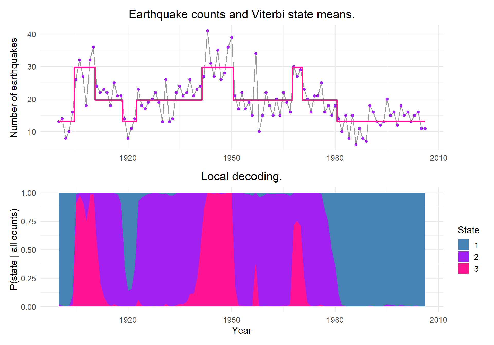
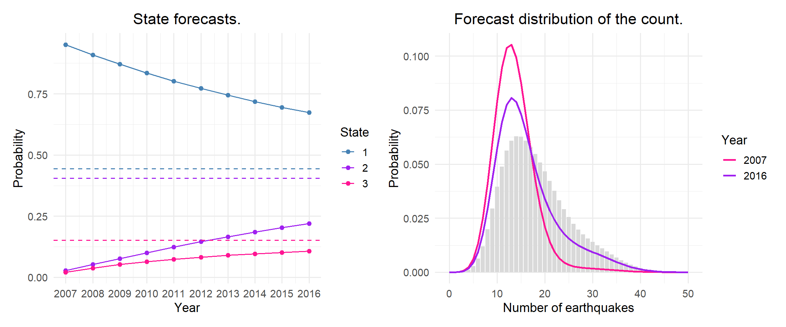
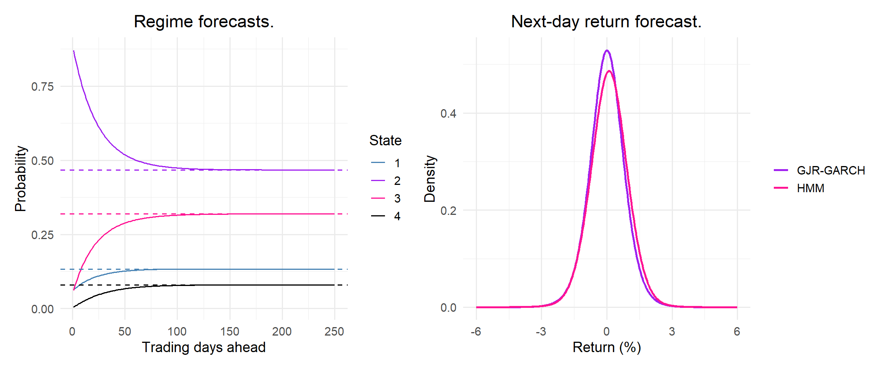

Hidden Markov models: from first principles to market regimes on the JSE
Show code
# Load required libraries (depmixS4 first so MASS does not mask dplyr's select()):library(depmixS4)library(rugarch)library(readxl)library(tidyverse)library(patchwork)library(knitr)# Set seed for reproducibility:set.seed(2026)# Project plotting theme and colours:theme_set(theme_minimal(base_size =14) +theme(plot.title =element_text(hjust =0.5),plot.subtitle =element_text(hjust =0.5)))col_main ="purple"col_accent ="deeppink"state_cols =c("1"="steelblue", "2"="purple", "3"="deeppink", "4"="black")options(knitr.kable.NA ="-")
Introduction
A hidden Markov model (HMM) is a state-space model with a discrete state. An unobserved state \(C_t \in \{1, \dots, m\}\) follows a Markov chain with transition probability matrix \(\Gamma\), \(\gamma_{ij} = P(C_t = j \mid C_{t-1} = i)\), and the observation \(X_t\) is drawn from a distribution that depends on the current state, \(p_i(x) = P(X_t = x \mid C_t = i)\) (Zucchini et al., 2016; Department of Statistical Sciences, 2026). Marginally each observation comes from a mixture of the state-dependent distributions, but because the state is persistent, the observations are correlated.
This project has two parts.
Part A implements all the core algorithms (the scaled forward algorithm for the likelihood, the backward algorithm, local decoding, the Viterbi algorithm, state forecasts and forecast distributions) from first principles as one small toolkit, and checks it against depmixS4 (Visser & Speekenbrink, 2010) on the earthquake data from the HMM tutorial. The other tutorial questions are in the Hidden Markov Models section of Section 2.
Part B uses the same toolkit to look for regimes in daily JSE All Share Index returns, the data used in Project 3. In Project 3, volatility was modelled as a continuous process with GJR-GARCH. In this project I ask whether the returns can be described by a small number of discrete market regimes, when these regimes occurred, and whether a Gaussian HMM forecasts the distribution of returns as well as GJR-GARCH.
Data
Earthquakes: annual counts of major earthquakes (magnitude 7 and above) worldwide, 1900–2006, the data set used in the notes and the tutorial (Zucchini et al., 2016). The 107 counts are entered in the code below and are the same values as earthquakes.csv from the tutorial.
JSE All Share Index: the daily FTSE/JSE All Share total return index (J203) from 30 June 1995 to 3 February 2017 (Gebbie, 2020), as in Project 3. Daily log returns (%) are modelled. July 1995 to December 2012 is the training set and January 2013 to February 2017 the test set.
Both data sets are publicly available and contain no personal information, so no consent, anonymisation or POPIA steps were needed.
Data access instructions. Download the daily workbook from https://doi.org/10.25375/uct.11302325.v1 and save it as _data/PT-DATA-ALBI-JIBAR-JSEIND-Daily-1994-2017.xlsx next to this file (the same file as in Project 3). The earthquake counts are entered in the code.
Hidden Markov Models from first principles
All the HMM functions are in scripts/hmm-toolkit.R, so that this project and the tutorial questions in Section 2 use exactly the same code. The file contains the scaled forward and backward algorithms, local decoding, the Viterbi algorithm (Rabiner, 1989), the stationary distribution, the working-parameter transformation and matrix powers for forecasting.
Every function takes a matrix of state-dependent densities, dens[t, i]\(= p_i(x_t)\), so the same code works for Poisson, Gaussian and categorical observations. Writing \(\mathbf{P}(x) = \text{diag}(p_1(x), \dots, p_m(x))\) and \(\boldsymbol{\delta}\) for the distribution of \(C_1\), the likelihood is
The forward algorithm evaluates this product recursively, \(\boldsymbol{\alpha}_t = \boldsymbol{\alpha}_{t-1}\Gamma\mathbf{P}(x_t)\), where \(\alpha_t(i) = P(x_{1:t}, C_t = i)\). The backward algorithm runs the other way, \(\boldsymbol{\beta}_t' = \Gamma\mathbf{P}(x_{t+1})\boldsymbol{\beta}_{t+1}'\), where \(\beta_t(i) = P(x_{t+1:T} \mid C_t = i)\). Because these products of small probabilities underflow, the code rescales at every step: it keeps the filtered probabilities \(\boldsymbol{\phi}_t\), with \(\phi_t(i) = P(C_t = i \mid x_{1:t})\), and adds the logs of the scaling constants \(u_t\).
The scaling constants are one-step-ahead forecast densities
Each scaling constant is \(u_t = \boldsymbol{\phi}_{t-1}\Gamma\mathbf{P}(x_t)\mathbf{1}' = p(x_t \mid x_{1:t-1})\). So \(\log L_T = \sum_t \log u_t\) is the same prediction error decomposition as for the Kalman filter in Section 2, and each \(\log u_t\) is the log score of a one-step-ahead forecast. Part B uses this to compare the HMM with GJR-GARCH out of sample.
Show code
# =============================================================================# HMM toolkit, written from first principles (Time Series Analysis portfolio)## Used by projects/project-04-analysis.qmd and section-2/section-2.qmd.# Every function works with the matrix of state-dependent densities# dens[t, i] = p_i(x_t), so the same code handles Poisson, Gaussian and# categorical observations.# =============================================================================# Log-likelihood only (fast version, used inside optim()):hmm_loglik =function(dens, delta, Gamma) { T_len =nrow(dens) v = delta * dens[1, ] ll =log(sum(v)) phi = v /sum(v)if (T_len >1) {for (t in2:T_len) { v =as.numeric(phi %*% Gamma) * dens[t, ] u =sum(v) ll = ll +log(u) phi = v / u } } ll}# Scaled forward algorithm: log-likelihood, log u_t, filtered probabilities and log alpha:hmm_forward =function(dens, delta, Gamma) { T_len =nrow(dens) m =ncol(dens) phi_mat =matrix(NA, T_len, m) lu =numeric(T_len)for (t in1:T_len) { v =if (t ==1) delta * dens[1, ] elseas.numeric(phi %*% Gamma) * dens[t, ] u =sum(v) lu[t] =log(u) # log p(x_t | x_{1:t-1}) phi = v / u # P(C_t = i | x_{1:t}) phi_mat[t, ] = phi }list(loglik =sum(lu), lu = lu, phi = phi_mat,lalpha =cumsum(lu) +log(phi_mat)) # log alpha_t(i)}# Scaled backward algorithm: log beta (Zucchini et al., 2016):hmm_backward =function(dens, Gamma) { T_len =nrow(dens) m =ncol(dens) lbeta =matrix(0, T_len, m) # log beta_T = 0 phi =rep(1/ m, m) lscale =log(m)if (T_len >1) {for (t in (T_len -1):1) { v =as.numeric(Gamma %*% (dens[t +1, ] * phi)) lbeta[t, ] =log(v) + lscale phi = v /sum(v) lscale = lscale +log(sum(v)) } } lbeta}# Local decoding: P(C_t = i | x_{1:T}) = alpha_t(i) beta_t(i) / L_T:hmm_local =function(dens, delta, Gamma) { fwd =hmm_forward(dens, delta, Gamma) lbeta =hmm_backward(dens, Gamma)exp(fwd$lalpha + lbeta - fwd$loglik)}# Global decoding with the Viterbi algorithm (log scale):hmm_viterbi =function(dens, delta, Gamma) { T_len =nrow(dens) m =ncol(dens) lG =log(Gamma) ld =log(dens) xi =matrix(NA, T_len, m) xi[1, ] =log(delta) + ld[1, ]if (T_len >1) {for (t in2:T_len) {for (j in1:m) { xi[t, j] =max(xi[t -1, ] + lG[, j]) + ld[t, j] } } }# Back-tracing: states =numeric(T_len) states[T_len] =which.max(xi[T_len, ])if (T_len >1) {for (t in (T_len -1):1) { states[t] =which.max(xi[t, ] + lG[, states[t +1]]) } }list(states = states, xi = xi)}# Stationary distribution: solve delta (I - Gamma + U) = 1:stat_dist =function(Gamma) { m =nrow(Gamma)solve(t(diag(m) - Gamma +1), rep(1, m))}# Working (unconstrained) parameters -> transition probability matrix:gamma_w2n =function(w, m) { G =diag(m) G[!G] =exp(w) # off-diagonal elements, relative to the diagonal G /rowSums(G)}# h-step transition matrix Gamma^h:mat_pow =function(M, h) { R =diag(nrow(M))for (i inseq_len(h)) R = R %*% M R}
The parameters are estimated on an unconstrained “working” scale, as in the notes, so that optim() and nlm() can be used without constraints. Each off-diagonal transition probability is \(\exp(w)\) relative to 1 on the diagonal, and each row is divided by its sum (a multinomial logit), so the rows always sum to one. Poisson rates and standard deviations are estimated on the log scale.
Part A: Validating the HMM toolkit on earthquake counts
I check the HMM toolkit on the main example from the HMM tutorial, Poisson HMMS for annual earthquake counts, by comparing it with depmixS4.
The counts have a variance much larger than their mean (overdispersion), so a single Poisson distribution cannot describe them. A Poisson HMM allows periods of lower and higher earthquake activity, with Poisson counts within each state.
Maximum likelihood from first principles
Show code
# Function to calculate negative log-likelihood of m-state Poisson HMM:pois_hmm_nll =function(w, x, m, stationary =TRUE) { lambda =exp(w[1:m])if (m ==1) { Gamma =matrix(1) delta =1 } else { Gamma =gamma_w2n(w[(m +1):(m + m * (m -1))], m) delta =if (stationary) stat_dist(Gamma) else { d =c(1, exp(w[(m + m * (m -1) +1):(m + m * (m -1) + m -1)])) d /sum(d) } } dens =outer(x, lambda, dpois) -hmm_loglik(dens, delta, Gamma)}# Function to convert working parameters to natural parameters:pois_hmm_unpack =function(w, m, stationary =TRUE) { lambda =exp(w[1:m]) Gamma =if (m ==1) matrix(1) elsegamma_w2n(w[(m +1):(m + m * (m -1))], m) delta =if (m ==1) 1elseif (stationary) stat_dist(Gamma) else { d =c(1, exp(w[(m + m * (m -1) +1):(m + m * (m -1) + m -1)])) d /sum(d) } ord =order(lambda)list(lambda = lambda[ord], Gamma = Gamma[ord, ord, drop =FALSE], delta = delta[ord])}# Function for starting values:eq_start =function(m) {c(log(quantile(eq_counts, probs = (1:m) / (m +1))), rep(-2, m * (m -1)))}eq_fits =map(1:4, function(m) {nlm(pois_hmm_nll, p =eq_start(m), x = eq_counts, m = m, iterlim =1000)})eq_tbl =tibble(m =1:4,Parameters = (1:4)^2, `-logL`=map_dbl(eq_fits, "minimum")) |>mutate(AIC =2*`-logL`+2* Parameters,BIC =2*`-logL`+ Parameters *log(length(eq_counts)))kable(eq_tbl, digits =2)
m
Parameters
-logL
AIC
BIC
1
1
391.92
785.84
788.51
2
4
342.32
692.64
703.33
3
9
329.46
676.92
700.98
4
16
327.83
687.66
730.43
I estimated the models with nlm() using the stationary distribution of \(\Gamma\) as \(\boldsymbol{\delta}\). Going from one to two states increases the log-likelihood by approximately 50, and going to three states by another 13. Both AIC and BIC select the three-state model, while a fourth state hardly changes the likelihood.
Table 1: Estimated three-state Poisson HMM for the earthquake counts (states ordered by their mean).
State
lambda
Stationary probability
Expected duration (years)
to state 1
to state 2
to state 3
1
13.146
0.444
22.038
0.955
0.024
0.021
2
19.721
0.404
9.937
0.050
0.899
0.051
3
29.714
0.152
5.085
0.000
0.197
0.803
The three states have mean annual counts of 13.1, 19.7 and 29.7 major earthquakes (Table 1), denoting low, medium and high activity. Each state tends to last for years before switching (about 22, 10 and 5 years on average), and this persistence creates the long runs of quiet and active years in the data. The high-activity state is the rarest, occurring only about 15% of the time.
Checking my likelihood against depmixS4
depmixS4 estimates the initial distribution \(\boldsymbol{\delta}\) freely instead of using the stationary distribution, so its log-likelihood is slightly higher. To check my code properly I also fitted my likelihood with a free \(\boldsymbol{\delta}\).
Show code
# Own likelihood with free initial distribution:eq_free =map(2:3, function(m) {optim(c(eq_start(m), rep(0, m -1)), pois_hmm_nll, x = eq_counts, m = m,stationary =FALSE, method ="BFGS", control =list(maxit =2000))})# depmixS4():eq_df =data.frame(count = eq_counts)set.seed(1)dm2 =depmix(count ~1, data = eq_df, nstates =2, family =poisson())fm2 = depmixS4::fit(dm2, verbose =FALSE)
converged at iteration 26 with logLik: -341.8787
Show code
set.seed(1)dm3 =depmix(count ~1, data = eq_df, nstates =3, family =poisson(),respstart =log(c(13, 20, 30)))fm3 = depmixS4::fit(dm3, verbose =FALSE)
When \(\boldsymbol{\delta}\) is estimated freely, my implementation reproduces the depmixS4 log-likelihoods and the values reported in the course notes exactly, and gives the same Poisson rates. The free initial distribution raises the log-likelihood by 0.44 for two states and 0.93 for three, because its maximum likelihood estimate places all of its mass on the state that best explains the first observation. Since this affects only the contribution of 1900, the difference is negligible for a series of 107 years. I therefore use the stationary distribution, which requires \(m - 1\) fewer parameters and treats the first observation in the same way as all the others.
Decoding
Show code
dens_eq3 =outer(eq_counts, eq3$lambda, dpois)vit_eq3 =hmm_viterbi(dens_eq3, eq3$delta, eq3$Gamma)$stateslocal_eq3 =hmm_local(dens_eq3, eq3$delta, eq3$Gamma)eq_df_plot =tibble(year = eq_years, count = eq_counts, state_mean = eq3$lambda[vit_eq3])p_eq =ggplot(data = eq_df_plot, mapping =aes(x = year)) +geom_line(aes(y = count), col ="grey60") +geom_point(aes(y = count), col = col_main, size =1.5) +geom_step(aes(y = state_mean), col = col_accent, linewidth =1, direction ="mid") +labs(title ="Earthquake counts and Viterbi state means.", x =NULL, y ="Number of earthquakes")local_long =tibble(year =rep(eq_years, 3),state =factor(rep(1:3, each =length(eq_years))),prob =as.numeric(local_eq3))p_local =ggplot(data = local_long, mapping =aes(x = year, y = prob, fill = state)) +geom_area() +scale_fill_manual(values = state_cols) +labs(title ="Local decoding.", x ="Year", y ="P(state | all counts)", fill ="State")p_eq / p_local# Do local and global decoding agree:mean(apply(local_eq3, 1, which.max) == vit_eq3)
[1] 0.9719626

Figure 1: Earthquake counts with the state means of the most likely state sequence (Viterbi, pink step line) for the three-state Poisson HMM (top), and the local decoding probabilities of the three states (bottom).
Global decoding (the Viterbi algorithm) finds the most likely sequence of states as a whole, whereas local decoding finds the most likely state for each year individually. The two methods agree for 97% of the years, so the decoded sequence is not sensitive to the choice of method. Figure 1 shows an extended period of high activity in the 1940s and early 1950s, and a sustained period of low activity from the 1980s onwards. The local decoding probabilities also show how certain each classification is: years in which two states are almost equally likely tend to fall at the transitions between periods, where the data cannot pin down exactly when the switch occurred.
Forecasting
The state forecast is \(P(C_{T+h} = i \mid \mathbf{x}) = \boldsymbol{\phi}_T\Gamma^h\), and the forecast distribution of a future count is the mixture \(P(X_{T+h} = x \mid \mathbf{x}) = \sum_i P(C_{T+h} = i \mid \mathbf{x})\,p_i(x)\).
Show code
phi_T_eq =hmm_forward(dens_eq3, eq3$delta, eq3$Gamma)$phi[length(eq_counts), ]# State forecasts for 2007-2016:state_fc_eq =t(sapply(1:10, function(h) as.numeric(phi_T_eq %*%mat_pow(eq3$Gamma, h))))# Forecast distribution of the count for h = 1, 5 and 10:x_grid =0:50fc_dist_eq =map(c(1, 5, 10), function(h) { probs =as.numeric(state_fc_eq[h, ] %*%t(outer(x_grid, eq3$lambda, dpois)))tibble(h = h, x = x_grid, prob = probs, cdf =cumsum(probs))}) |>list_rbind()# Marginal distribution for comparison:marg_eq =tibble(x = x_grid, prob =as.numeric(eq3$delta %*%t(outer(x_grid, eq3$lambda, dpois))))eq_fc_tbl = fc_dist_eq |>group_by(h) |>summarise(Year =2006+first(h),Mean =sum(x * prob),Median = x[which(cdf >=0.5)[1]],`Lower 95%`= x[which(cdf >=0.025)[1]],`Upper 95%`= x[which(cdf >=0.975)[1]],.groups ="drop")
Show code
kable(eq_fc_tbl, digits =1)
Table 2: Forecasts of the number of major earthquakes from the three-state Poisson HMM: mean, median and 95% forecast interval of the forecast distribution.
h
Year
Mean
Median
Lower 95%
Upper 95%
1
2007
13.7
13
7
24
5
2011
15.2
14
7
32
10
2016
16.4
15
7
34
Show code
state_fc_long =tibble(year =rep(2007:2016, 3),state =factor(rep(1:3, each =10)),prob =as.numeric(state_fc_eq))p_sfc =ggplot(data = state_fc_long, mapping =aes(x = year, y = prob, colour = state)) +geom_line() +geom_point() +geom_hline(yintercept = eq3$delta, linetype ="dashed", colour = state_cols[1:3]) +scale_colour_manual(values = state_cols) +scale_x_continuous(breaks =2007:2016) +labs(title ="State forecasts.", x ="Year", y ="Probability", colour ="State")p_xfc =ggplot() +geom_col(data = marg_eq, aes(x = x, y = prob), fill ="grey85") +geom_line(data =filter(fc_dist_eq, h %in%c(1, 10)),aes(x = x, y = prob, colour =factor(h)), linewidth =0.9) +scale_colour_manual(values =c("1"= col_accent, "10"= col_main), labels =c("2007", "2016")) +labs(title ="Forecast distribution of the count.", x ="Number of earthquakes", y ="Probability",colour ="Year")p_sfc + p_xfc

Figure 2: Left: forecast state probabilities for 2007-2016, converging to the stationary distribution (dashed lines). Right: forecast distribution of the number of earthquakes in 2007 (h = 1) and in 2016 (h = 10), with the stationary (marginal) distribution in grey.
Because the series ends in the low-activity state, the forecast for 2007 is concentrated on low counts, with a median of 13 and a 95% forecast interval of 7 to 24 earthquakes (Table 2). As the forecast horizon increases, the state probabilities converge to the stationary distribution, and the forecast distribution of the counts approaches their marginal distribution (Figure 2). By 2016 the 95% interval has widened to 7 to 34. Since the states are persistent, this convergence takes several years, so the HMM provides informative forecasts a few years ahead, which an independent mixture model could not do. The forecast intervals are also wider than those of a single Poisson distribution with the same mean, since they account for the uncertainty about which state the process will be in.
Part B: Market regimes in JSE All Share Index returns
In Project 3, I modelled the volatility of daily JSE All Share Index (ALSI) returns with GARCH models, in which the conditional variance evolves continuously from one day to the next. A Gaussian HMM offers an alternative view: the market is assumed to be in one of \(m\) unobserved regimes, each with its own mean return and volatility, and to move between them according to a Markov chain (Hamilton, 1989; Rydén et al., 1998). Since the regimes are persistent, the model generates volatility clustering, and because the marginal distribution of returns is a mixture of normals, it also generates heavy tails. Both are stylised facts of daily returns that a single normal distribution cannot capture. This extension addresses three questions:
How many regimes are needed to describe the returns, and do they correspond to known periods of market stress?
How does the volatility implied by the HMM compare with the GJR-GARCH volatility from Project 3?
Does a Gaussian HMM forecast the distribution of the next day’s return as well as GJR-GARCH does?
The data and the training/test split are the same as in Project 3: 4373 daily returns from July 1995 to December 2012 for estimation and 1023 returns from January 2013 to February 2017 for evaluation.
How many regimes?
Within each regime, returns are assumed to be normally distributed, \(X_t \mid C_t = i \sim N(\mu_i, \sigma_i^2)\). Although each regime is normal, switching between persistent normal regimes can already produce heavy tails and volatility clustering. The pseudo-residuals below are used to check if this is enough.
Models with \(m = 1, \dots, 4\) states are fitted by maximising the likelihood from my forward algorithm with optim(), using the stationary distribution of \(\Gamma\) as \(\boldsymbol{\delta}\). The starting values spread the state volatilities from calm to turbulent, so that each state starts in a different part of the volatility range.
Show code
# Function to calculate negative log-likelihood of m-state Gaussian HMM:norm_hmm_nll =function(w, x, m) { mu = w[1:m] sigma =exp(w[(m +1):(2* m)]) Gamma =if (m ==1) matrix(1) elsegamma_w2n(w[(2* m +1):(2* m + m * (m -1))], m) delta =if (m ==1) 1elsestat_dist(Gamma) dens =sapply(1:m, function(j) dnorm(x, mu[j], sigma[j]))-hmm_loglik(matrix(dens, ncol = m), delta, Gamma)}# Function to unpack working parameters:norm_hmm_unpack =function(w, m) { mu = w[1:m] sigma =exp(w[(m +1):(2* m)]) Gamma =if (m ==1) matrix(1) elsegamma_w2n(w[(2* m +1):(2* m + m * (m -1))], m) ord =order(sigma) Gamma = Gamma[ord, ord, drop =FALSE]list(m = m, mu = mu[ord], sigma = sigma[ord], Gamma = Gamma,delta =if (m ==1) 1elsestat_dist(Gamma))}# Function to compute density matrix for fitted Gaussian HMM:norm_dens =function(x, pars) {matrix(sapply(1:pars$m, function(j) dnorm(x, pars$mu[j], pars$sigma[j])), ncol = pars$m)}jse_starts =list(c(mean(r_train), log(sd(r_train))),c(0.1, -0.1, log(0.8), log(2), rep(-3, 2)),c(0.1, 0.05, -0.3, log(0.6), log(1.1), log(2.5), rep(-4, 6)),c(0.12, 0.08, 0, -0.3, log(0.5), log(0.85), log(1.4), log(2.8), rep(-4, 12)))jse_fits =map(1:4, function(m) {optim(jse_starts[[m]], norm_hmm_nll, x = r_train, m = m, method ="BFGS",control =list(maxit =2000))})
HMM likelihoods can have several local maxima, so a single set of starting values may not find the best fit. The models with two to four states were therefore fitted from five randomly perturbed sets of starting values, and the best fit for each \(m\) is used (Table 3).
Show code
# Refit m = 2, 3, 4 from random perturbations of starting values:n_random =5set.seed(2026)multi =map(2:4, function(m) { fits =map(1:n_random, function(i) { w0 = jse_starts[[m]] +rnorm(length(jse_starts[[m]]), sd =0.5)tryCatch(optim(w0, norm_hmm_nll, x = r_train, m = m, method ="BFGS",control =list(maxit =2000)),error =function(e) NULL) })compact(fits)})multistart_tbl =map(1:3, function(k) { m = k +1 ll_first =-jse_fits[[m]]$value ll_random =-map_dbl(multi[[k]], "value") ll_max =max(c(ll_first, ll_random))tibble(m = m,`Random starts used`=length(ll_random),`logL, first start`= ll_first,`Best logL, random starts`=max(ll_random),`Random starts within 0.1 of the maximum`=sum(ll_random > ll_max -0.1))}) |>list_rbind()# Keep the best fit for each m:for (k in1:3) { m = k +1 candidates =c(list(jse_fits[[m]]), multi[[k]]) jse_fits[[m]] = candidates[[which.min(map_dbl(candidates, "value"))]]}jse_pars =map(1:4, function(m) norm_hmm_unpack(jse_fits[[m]]$par, m))
Show code
kable(multistart_tbl, digits =2)
Table 3: Log-likelihoods from the first starting values and from five random starting values for each model. The best of all fits is used below.
m
Random starts used
logL, first start
Best logL, random starts
Random starts within 0.1 of the maximum
2
4
-6660.27
-6660.27
3
3
4
-6550.64
-6550.64
3
4
5
-6514.21
-6514.21
3
None of the random starting values found a higher likelihood than the original ones, which makes it more likely that these fits are the global maxima.
Table 4: Gaussian HMMs with one to four states fitted to the training returns: log-likelihood, AIC, BIC and the convergence code of optim() (0 = converged).
m
Parameters
logL
Convergence
AIC
BIC
1
2
-7276.3
0
14556.7
14569.4
2
6
-6660.3
0
13332.5
13370.8
3
12
-6550.6
0
13125.3
13201.9
4
20
-6514.2
0
13068.4
13196.1
A single normal distribution fits the returns poorly, and each additional state improves the log-likelihood by less than the previous one (Table 4). BIC selects the 4-state model, but the gain from three to four states is much smaller than from two to three, which suggests that three regimes already capture the main structure in the returns. The analysis below uses the model selected by BIC, but the decoded regimes of the three-state model are also shown, as they are easier to interpret.
Check with depmixS4. As in Part A, the two-state fit was checked against depmixS4, which estimates the model with the EM algorithm and a free initial distribution. The package was fitted twice: once with its default starting values, and once with starting values corresponding to a calm and a turbulent state.
# (b) Starting values (mean, sd) for calm and turbulent state:dm_jse_sv =depmix(r ~1, data =data.frame(r = r_train), nstates =2, family =gaussian(),respstart =c(0.1, 0.8, -0.1, 2))fm_sv = depmixS4::fit(dm_jse_sv, verbose =FALSE, emcontrol =em.control(rand =FALSE))
converged at iteration 35 with logLik: -6659.98
Show code
# Function to return logL, means and sds (states ordered by sd):dm_summary =function(fm) { resp =matrix(tail(getpars(fm), 4), ncol =2, byrow =TRUE) ord =order(resp[, 2])c(as.numeric(logLik(fm)), resp[ord, 1], resp[ord, 2])}dm_tbl =tibble(Quantity =c("logL", "mu (calm)", "mu (turbulent)", "sigma (calm)", "sigma (turbulent)"),`My code (stationary delta)`=c(-jse_fits[[2]]$value, jse_pars[[2]]$mu, jse_pars[[2]]$sigma),`depmixS4, default start`=dm_summary(fm_default),`depmixS4, my starting values`=dm_summary(fm_sv))dm_max_diff =max(abs(dm_tbl[[2]][-1] - dm_tbl[[4]][-1]))kable(dm_tbl, digits =4)
Quantity
My code (stationary delta)
depmixS4, default start
depmixS4, my starting values
logL
-6660.2722
-7276.3283
-6659.9799
mu (calm)
0.1062
0.0589
0.1062
mu (turbulent)
-0.0670
0.0589
-0.0668
sigma (calm)
0.8339
1.2776
0.8337
sigma (turbulent)
2.0257
1.2776
2.0250
With its default starting values, depmixS4 stopped at a log-likelihood of -7276.33, which is the log-likelihood of the one-state model (Table 4): both “states” have the same mean and standard deviation. When the two states start out identical, the EM algorithm has no reason to separate them, so it remains at this saddle point rather than reaching the maximum. With starting values corresponding to a calm and a turbulent state, depmixS4 reaches a log-likelihood of -6659.98, compared with -6660.27 for my implementation, and the largest difference between the two sets of means and standard deviations is 6.6^{-4}. As in Part A, the depmixS4 log-likelihood is slightly higher because it estimates the initial distribution freely.
The regimes
Show code
regime_tbl =tibble(State =1:best$m,`Mean (% per day)`= best$mu,`SD (% per day)`= best$sigma,`Annualised volatility (%)`= best$sigma *sqrt(ann_factor),`Stationary probability`= best$delta,`Expected duration (days)`=1/ (1-diag(best$Gamma)))kable(regime_tbl, digits =3)# Transition probability matrix:kable(best$Gamma, digits =4, col.names =paste("to", 1:best$m))
Estimated state-dependent distributions of the selected Gaussian HMM, ordered from lowest to highest volatility. Volatility is also shown annualised (sigma times the square root of 252).
State
Mean (% per day)
SD (% per day)
Annualised volatility (%)
Stationary probability
Expected duration (days)
1
0.127
0.508
8.060
0.133
59.989
2
0.098
0.831
13.184
0.467
44.319
3
0.063
1.362
21.620
0.320
28.569
4
-0.276
2.815
44.679
0.080
20.369
to 1
to 2
to 3
to 4
0.9833
0.0167
0.0000
0.0000
0.0047
0.9774
0.0155
0.0023
0.0000
0.0261
0.9650
0.0089
0.0000
0.0000
0.0491
0.9509
The regimes in ?@tbl-regimes are ordered by volatility, ranging from a calm market with an annualised volatility of about 8% to a crisis regime with about 45%. Mean returns decrease as volatility increases, and the crisis regime has a negative mean return of -0.276% per day. High volatility therefore tends to coincide with falling prices, which is consistent with the leverage effect found in Project 3. The market is in the crisis regime about 8% of the time, and a spell lasts about 20 trading days on average, compared with 60 days for the calmest regime.
Most of the transition probabilities are close to zero except those between neighbouring regimes: the market almost never moves directly from the calmest regime to the crisis regime, but passes through the intermediate regimes. Volatility therefore rises and falls gradually through a set of ordered levels, which resembles a discretised version of the continuously changing volatility in a GARCH model.
How precise are the estimates?
To assess the precision of these estimates, approximate standard errors were computed from the Hessian of the negative log-likelihood at the maximum. The inverse of the Hessian estimates the covariance matrix of the working parameters, and the delta method, using a numerical Jacobian, transforms this into standard errors for the means, annualised volatilities and expected durations.
Show code
w_hat = jse_fits[[m_best]]$parH =optimHess(w_hat, norm_hmm_nll, x = r_train, m = m_best)V_w =solve(H) # Function for quantities of interest in terms of working parameters:natural =function(w) { p =norm_hmm_unpack(w, m_best)c(p$mu, p$sigma *sqrt(ann_factor), 1/ (1-diag(p$Gamma)))}# Delta method with numerical Jacobian:eps =1e-5J =sapply(seq_along(w_hat), function(k) { e =replace(numeric(length(w_hat)), k, eps) (natural(w_hat + e) -natural(w_hat - e)) / (2* eps)})est =natural(w_hat)se =sqrt(diag(J %*% V_w %*%t(J)))se_tbl =tibble(State =rep(1:m_best, 3),Quantity =rep(c("Mean (% per day)", "Annualised volatility (%)", "Expected duration (days)"),each = m_best),Estimate = est,SE = se,`Lower 95%`= est -1.96* se,`Upper 95%`= est +1.96* se) |>arrange(State)crisis_mean_ci =c(est[m_best] -1.96* se[m_best], est[m_best] +1.96* se[m_best])rel_se = se/abs(est)
Show code
kable(se_tbl, digits =3)
Table 5: Approximate standard errors and 95% confidence intervals (Hessian and delta method) for the selected HMM.
State
Quantity
Estimate
SE
Lower 95%
Upper 95%
1
Mean (% per day)
0.127
0.025
0.078
0.176
1
Annualised volatility (%)
8.060
0.329
7.415
8.705
1
Expected duration (days)
59.989
26.279
8.482
111.496
2
Mean (% per day)
0.098
0.022
0.056
0.141
2
Annualised volatility (%)
13.184
0.374
12.450
13.918
2
Expected duration (days)
44.319
9.613
25.478
63.160
3
Mean (% per day)
0.063
0.044
-0.024
0.149
3
Annualised volatility (%)
21.620
0.846
19.961
23.279
3
Expected duration (days)
28.569
6.590
15.653
41.484
4
Mean (% per day)
-0.276
0.157
-0.583
0.031
4
Annualised volatility (%)
44.679
2.420
39.935
49.423
4
Expected duration (days)
20.369
6.575
7.483
33.256
The volatilities are estimated much more precisely than the means and expected durations (Table 5). The 95% confidence interval for the mean return in the crisis regime is -0.583 to 0.031% per day, so the negative mean return in the crisis regime is not statistically significant. Thus, the link between high volatility and falling prices should be interpreted with caution. The expected durations depend on how often the market switches between regimes. 17 years of data contain relatively few switches, so the intervals are wide.
These intervals are only approximate. They are symmetric, although the volatilities and durations are positive and their sampling distributions are probably skewed. They assume that the log-likelihood is close to quadratic near the maximum. A parametric bootstrap would give more reliable intervals, but refitting a four-state model many times was too computationally expensive for this project.
Figure 3: Daily ALSI returns in the training set coloured by the Viterbi state of the selected HMM (top) and of the three-state HMM (bottom). States are ordered from lowest (blue) to highest (pink or black) volatility.
Table 6: Periods of at least 20 consecutive trading days in the highest-volatility state (Viterbi path of the selected model).
From
To
Trading days
1998-05-27
1998-06-24
20
1998-08-11
1998-10-20
50
2006-05-12
2006-06-15
25
2008-09-05
2009-05-04
162
Figure 3 and Table 6 show that the crisis regime identifies well-known periods of market stress. The longest crisis spell covers the global financial crisis, from September 2008 to May 2009. The 1998 emerging market and Russian crisis appears as two separate spells, in May–June and August–October 1998, and a shorter spell in May–June 2006 coincides with that year’s emerging market sell-off. Not every stressed period produces a long crisis spell: the rand crash of late 2001, for example, does not appear in Table 6, which only lists spells of at least 20 trading days. The calmest regime dominates the bull market of the mid-2000s, before 2006. The three-state model gives a very similar picture, with the two calmest regimes of the four-state model combined into one.
Model checking with pseudo-residuals
If the model is correct, the normal pseudo-residuals \(z_t = \Phi^{-1}\left(P(X_t \leq x_t \mid x_{1:t-1})\right)\) are independent standard normal (Zucchini et al., 2016). They play the same role as the standardised residuals of a GARCH model.
Show code
# Function to calculate one-step-ahead normal pseudo-residuals:norm_pseudo =function(x, pars) { dens =norm_dens(x, pars) fwd =hmm_forward(dens, pars$delta, pars$Gamma) T_len =length(x) pred =rbind(pars$delta, fwd$phi[-T_len, , drop =FALSE] %*% pars$Gamma) # P(C_t | x_{1:t-1}) cdf =matrix(sapply(1:pars$m, function(j) pnorm(x, pars$mu[j], pars$sigma[j])), ncol = pars$m) u =rowSums(pred * cdf)qnorm(pmin(pmax(u, 1e-10), 1-1e-10))}pseudo_tbl =map(1:4, function(m) { z =norm_pseudo(r_train, jse_pars[[m]])tibble(m = m,`Excess kurtosis`=mean((z -mean(z))^4) /sd(z)^4-3,`LB z (10)`=Box.test(z, lag =10, type ="Ljung-Box")$p.value,`LB z² (10)`=Box.test(z^2, lag =10, type ="Ljung-Box")$p.value)}) |>list_rbind()kable(pseudo_tbl, digits =3)
Table 7: Normal pseudo-residuals of the Gaussian HMMs on the training set: excess kurtosis, and Ljung-Box p-values at lag 10 for the pseudo-residuals and their squares.
m
Excess kurtosis
LB z (10)
LB z² (10)
1
4.375
0
0.000
2
0.530
0
0.000
3
0.084
0
0.157
4
0.017
0
0.826
With a single state, the pseudo-residuals have clearly heavy tails, and their squares are strongly autocorrelated. Adding a second state removes most of the excess kurtosis, but the squared pseudo-residuals are still autocorrelated, so some volatility clustering remains. From three states onwards, the excess kurtosis is close to zero and the Ljung-Box test on the squared pseudo-residuals no longer rejects (Table 7). A small number of persistent regimes is therefore enough to capture both the heavy tails and the volatility clustering of daily returns. However, the Ljung-Box test on the pseudo-residuals themselves rejects for every model. This is most likely because the HMM does not include an autoregressive term for the mean: in Project 3, the AR(1) coefficient was small but significant, and the HMM ignores this dependence.
Comparison with GJR-GARCH
To compare the two approaches, the GJR-GARCH(1,1) model with Student-\(t\) errors and an AR(1) mean (Glosten et al., 1993), which was selected in Project 3, was refitted to the same training set with rugarch (Ghalanos, 2024). Both models were then run through the test period with their parameters held fixed. For the HMM, the one-step-ahead forecast distribution is the mixture \(\sum_i P(C_t = i \mid x_{1:t-1})\,N(\mu_i, \sigma_i^2)\), whose log density at the observed return is \(\log u_t\) from the forward algorithm.
Show code
spec_gjr =ugarchspec(variance.model =list(model ="gjrGARCH", garchOrder =c(1, 1)),mean.model =list(armaOrder =c(1, 0), include.mean =TRUE),distribution.model ="std")gjr_fit =ugarchfit(spec = spec_gjr, data = r_train, solver ="hybrid")# Filter whole series with training parameters fixed:spec_fixed = spec_gjrsetfixed(spec_fixed) =as.list(coef(gjr_fit))gjr_filt =ugarchfilter(spec = spec_fixed, data = r_all)gjr_mu =as.numeric(fitted(gjr_filt))gjr_sigma =as.numeric(sigma(gjr_filt))gjr_nu =coef(gjr_fit)["shape"]# One-step-ahead log scores:ls_gjr =log(ddist("std", y = r_all, mu = gjr_mu, sigma = gjr_sigma, shape = gjr_nu))ls_hmm =map(1:4, function(m) {hmm_forward(norm_dens(r_all, jse_pars[[m]]), jse_pars[[m]]$delta, jse_pars[[m]]$Gamma)$lu})
Figure 4: Training period: GJR-GARCH conditional volatility (top) and the volatility implied by the HMM’s filtered state probabilities (bottom), both annualised. Both use only returns up to the previous day or the current day, so they are what could have been known in real time. The shading in the bottom panel is the filtered probability of the crisis regime.
To ensure a like-for-like comparison, the HMM volatility in Figure 4 is computed from the filtered probabilities, which, like the GARCH volatility, depend only on returns up to each day. The correlation between the two volatility series is 0.9. Based on the smoothed probabilities, which also use future returns, the correlation rises to 0.83. However, the smoothed series is not available in real time. The HMM volatility moves between a small number of levels, whereas the GJR-GARCH volatility responds continuously to each return, rising sharply after large negative returns and then decaying gradually. In contrast to GARCH, the HMM classifies each day into an interpretable regime, with an associated probability, and provides an expected duration for each regime.
Show code
# Function for default lag L = floor(4 (n / 100)^(2/9)):nw_lag =function(n) floor(4* (n /100)^(2/9))# Function for Newey-West SE of a mean:nw_se =function(d, L =nw_lag(length(d))) { n =length(d) u = d -mean(d) s =sum(u^2) / nfor (l in1:L) s = s +2* (1- l / (L +1)) *sum(u[-(1:l)] * u[1:(n - l)]) / nsqrt(s / n)}test_idx = (n_train +1):length(r_all)score_tbl =map(1:4, function(m) { d = ls_hmm[[m]][test_idx] - ls_gjr[test_idx]tibble(Model =paste0("Gaussian HMM, ", m, " state", if (m >1) "s"else""),`Train log score`=mean(ls_hmm[[m]][1:n_train]),`Test log score`=mean(ls_hmm[[m]][test_idx]),`Difference to GJR (test)`=mean(d),`p-value`=2*pnorm(-abs(mean(d) /nw_se(d))))}) |>list_rbind() |>bind_rows(tibble(Model ="GJR-GARCH(1,1)-t",`Train log score`=mean(ls_gjr[1:n_train]),`Test log score`=mean(ls_gjr[test_idx])))kable(score_tbl, digits =4)
Table 8: Mean one-step-ahead log score (higher is better) in the training and test sets, with the parameters estimated on the training set. The last column tests whether the mean difference to GJR-GARCH in the test set is zero (Newey-West standard errors).
Model
Train log score
Test log score
Difference to GJR (test)
p-value
Gaussian HMM, 1 state
-1.6639
-1.4503
-0.1332
0.0000
Gaussian HMM, 2 states
-1.5230
-1.3529
-0.0358
0.0000
Gaussian HMM, 3 states
-1.4980
-1.3314
-0.0144
0.0067
Gaussian HMM, 4 states
-1.4896
-1.3262
-0.0091
0.0165
GJR-GARCH(1,1)-t
-1.4848
-1.3171
-
-
Forecasts are compared using the log score, which evaluates the whole forecast distribution rather than only its variance. It is also a strictly proper scoring rule, so a model cannot improve its score by misrepresenting its uncertainty (Gneiting & Raftery, 2007). Because the daily differences in log score are autocorrelated, the test of equal predictive ability uses Newey-West standard errors, with 6 lags chosen by the rule of thumb \(\lfloor 4(n/100)^{2/9} \rfloor\) (Newey & West, 1994).
Out of sample, the log score improves with each additional state, but GJR-GARCH still achieves the highest log score, and its advantage over every HMM is statistically significant at the 5% level (Table 8). GJR-GARCH also has a higher log score on the training set, despite having fewer parameters (7, compared with 20 for the selected HMM). Several features of GJR-GARCH explain this. Its volatility can take any value rather than a few fixed levels, and it reacts immediately to each new return, whereas an HMM needs several large returns before it is confident that the regime has changed. It also responds asymmetrically to negative returns and models the AR(1) mean. Finally, its Student-\(t\) errors allow heavy tails within each day, while the HMM’s normal states can only produce heavy tails by switching between regimes.
sfc_df =tibble(h =rep(1:250, best$m),state =factor(rep(1:best$m, each =250)),prob =as.numeric(state_fc_jse))p_state =ggplot(data = sfc_df, mapping =aes(x = h, y = prob, colour = state)) +geom_line() +geom_hline(yintercept = best$delta, linetype ="dashed", colour = state_cols[1:best$m]) +scale_colour_manual(values = state_cols) +labs(title ="Regime forecasts.", x ="Trading days ahead", y ="Probability", colour ="State")x_seq =seq(-6, 6, length.out =400)dens_fc =tibble(x =rep(x_seq, 2),density =c(sapply(x_seq, function(x) sum(w1 *dnorm(x, best$mu, best$sigma))),ddist("std", y = x_seq, mu = gjr_mu1, sigma = gjr_sigma1, shape = gjr_nu)),Model =rep(c("HMM", "GJR-GARCH"), each =length(x_seq)))p_dens =ggplot(data = dens_fc, mapping =aes(x = x, y = density, colour = Model)) +geom_line(linewidth =0.9) +scale_colour_manual(values =c("HMM"= col_accent, "GJR-GARCH"= col_main)) +labs(title ="Next-day return forecast.", x ="Return (%)", y ="Density", colour =NULL)p_state + p_dens

Figure 5: Left: forecast probabilities of each regime for up to 250 trading days after 3 February 2017, converging to the stationary distribution (dashed). Right: forecast density of the next day’s return from the HMM (pink) and GJR-GARCH (purple).
Show code
kable(var_tbl, digits =3)
Table 9: Forecasts for the next trading day after 3 February 2017: forecast standard deviation and the 1% and 5% quantiles of the forecast distribution of the return. The quantiles are the Value-at-Risk reported as returns: a 1% quantile of -2% means a 1% chance of losing more than 2% the next day.
Model
Forecast SD (%)
1% quantile (%)
5% quantile (%)
Gaussian HMM (4 states)
0.877
-2.012
-1.315
GJR-GARCH(1,1)-t
0.823
-2.029
-1.326
At the end of the sample, the market is most likely in regime 2 (probability 0.89). Over the following few hundred trading days, the regime forecasts converge to the stationary distribution (Figure 5), which is the HMM’s equivalent of GARCH volatility reverting to its long-run level. The next-day forecast distributions of the two models are similar in the centre, and their 1% and 5% quantiles in Table 9 are close. Both models therefore indicate that volatility at the end of the sample was below its long-run level, which agrees with the conclusion of Project 3.
Discussion
Model recommendations
For the earthquake counts, a three-state Poisson HMM is preferred by both AIC and BIC. It identifies periods of low, medium and high activity that each last several years, and its forecast distributions take the current state of the process into account.
For the JSE returns, Gaussian HMMs with three or four regimes capture the main stylised facts of daily returns: volatility clustering, heavy tails and lower mean returns in more volatile regimes (?@tbl-regimes, Table 7). The decoded crisis regime identifies the 1998 and 2008–2009 crises (Table 6), and the volatility implied by the HMM is closely related to the GJR-GARCH volatility (Figure 4). However, for forecasting the distribution of the next day’s return, GJR-GARCH-\(t\) remains the better model (Table 8). I would therefore use the HMM to describe the market, for example to date regimes, measure how long they last and estimate the probability that the market is currently in a crisis regime, and GJR-GARCH to forecast risk, as recommended in Project 3.
Interactive explorer
The JSE regime explorer is a Shiny app based on the same models (code in scripts/shiny-app/). It displays the regimes for one to four states using global decoding, local decoding or filtered probabilities, allows the user to zoom in on crisis periods, and compares the HMM volatility and log scores with those of GJR-GARCH. Switching between the smoothed and filtered probabilities shows clearly that the filtered regimes, which use only past returns, change later than the smoothed ones.
Limitations
The number of states was chosen by BIC, which was still decreasing at four states, and models with more states were not fitted. The “right” number of regimes is therefore not well defined; additional states mainly divide the volatility range more finely.
The state-dependent distributions are normal and their means do not depend on the previous return. The model therefore ignores the small AR(1) effect found in Project 3 (Table 7) and can only produce heavy tails by switching between regimes.
The parameters were estimated once, on 1995–2012, and assumed to be constant, and the transition probabilities do not depend on covariates such as the exchange rate or global volatility.
The likelihood was maximised numerically. Five random starting values per model (Table 3) make it more likely that the global maximum was found, but cannot guarantee it. The depmixS4 check covered only the two-state model, and it showed how easily an optimiser can stop at the wrong solution when the starting values are poor.
The standard errors in Table 5 are based on the Hessian and the delta method, which give symmetric intervals and assume that the log-likelihood is approximately quadratic near the maximum. They also ignore the uncertainty in choosing the number of regimes.
The decoded regimes are estimates. Near regime switches, the local decoding probabilities can be far from 0 or 1, so the regime assigned to an individual day should not be over-interpreted.
Improvements
Markov-switching GARCH. Combining the two approaches, with GARCH dynamics within each regime and Markov switching between regimes (Haas et al., 2004), would keep both the interpretability of regimes and the responsiveness of GARCH.
More flexible state-dependent distributions. Student-\(t\) distributions within each regime, and an AR(1) term in each state, which gives a Markov-switching autoregression (Hamilton, 1989).
Time-varying transition probabilities. Allowing \(\Gamma\) to depend on covariates, such as the SAVI volatility index or the exchange rate, could make regime changes partly predictable.
More thorough evaluation. Rolling re-estimation, Value-at-Risk backtests as in Project 3, and parametric bootstrap confidence intervals for the transition probabilities and expected durations.
Link to Project 2. The same regime-switching approach could be applied to the El Niño Southern Oscillation, which moves between El Niño, La Niña and neutral phases. I suggested this as an improvement in Project 2, and HMMs handle the missing SST months naturally, since the forward algorithm simply skips the update when an observation is missing.
References
Department of Statistical Sciences. (2026). Time series analysis: Part 2, Chapter 4: Hidden Markov models [Course notes]. University of Cape Town.
Glosten, L. R., Jagannathan, R., & Runkle, D. E. (1993). On the relation between the expected value and the volatility of the nominal excess return on stocks. The Journal of Finance, 48(5), 1779–1801. https://doi.org/10.1111/j.1540-6261.1993.tb05128.x
Gneiting, T., & Raftery, A. E. (2007). Strictly proper scoring rules, prediction, and estimation. Journal of the American Statistical Association, 102(477), 359–378. https://doi.org/10.1198/016214506000001437
Haas, M., Mittnik, S., & Paolella, M. S. (2004). A new approach to Markov-switching GARCH models. Journal of Financial Econometrics, 2(4), 493–530. https://doi.org/10.1093/jjfinec/nbh020
Hamilton, J. D. (1989). A new approach to the economic analysis of nonstationary time series and the business cycle. Econometrica, 57(2), 357–384. https://doi.org/10.2307/1912559
Newey, W. K., & West, K. D. (1994). Automatic lag selection in covariance matrix estimation. The Review of Economic Studies, 61(4), 631–653. https://doi.org/10.2307/2297912
Rabiner, L. R. (1989). A tutorial on hidden Markov models and selected applications in speech recognition. Proceedings of the IEEE, 77(2), 257–286. https://doi.org/10.1109/5.18626
Rydén, T., Teräsvirta, T., & Åsbrink, S. (1998). Stylized facts of daily return series and the hidden Markov model. Journal of Applied Econometrics, 13(3), 217–244.
Visser, I., & Speekenbrink, M. (2010). depmixS4: An R package for hidden Markov models. Journal of Statistical Software, 36(7), 1–21. https://doi.org/10.18637/jss.v036.i07
Zucchini, W., MacDonald, I. L., & Langrock, R. (2016). Hidden Markov models for time series: An introduction using R (2nd ed.). CRC Press.
---format: html: code-fold: true code-summary: "Show code" code-tools: trueexecute: warning: false message: falseeditor: visual---# Hidden Markov models: from first principles to market regimes on the JSE```{r}#| label: setup# Load required libraries (depmixS4 first so MASS does not mask dplyr's select()):library(depmixS4)library(rugarch)library(readxl)library(tidyverse)library(patchwork)library(knitr)# Set seed for reproducibility:set.seed(2026)# Project plotting theme and colours:theme_set(theme_minimal(base_size =14) +theme(plot.title =element_text(hjust =0.5),plot.subtitle =element_text(hjust =0.5)))col_main ="purple"col_accent ="deeppink"state_cols =c("1"="steelblue", "2"="purple", "3"="deeppink", "4"="black")options(knitr.kable.NA ="-")```## IntroductionA hidden Markov model (HMM) is a state-space model with a *discrete* state. An unobserved state $C_t \in \{1, \dots, m\}$ follows a Markov chain with transition probability matrix $\Gamma$, $\gamma_{ij} = P(C_t = j \mid C_{t-1} = i)$, and the observation $X_t$ is drawn from a distribution that depends on the current state, $p_i(x) = P(X_t = x \mid C_t = i)$ (Zucchini et al., 2016; Department of Statistical Sciences, 2026). Marginally each observation comes from a mixture of the state-dependent distributions, but because the state is persistent, the observations are correlated.This project has two parts.1. **Part A** implements all the core algorithms (the scaled forward algorithm for the likelihood, the backward algorithm, local decoding, the Viterbi algorithm, state forecasts and forecast distributions) from first principles as one small toolkit, and checks it against `depmixS4` (Visser & Speekenbrink, 2010) on the earthquake data from the HMM tutorial. The other tutorial questions are in the [Hidden Markov Models section of Section 2](../section-2/section-2.qmd#hidden-markov-models).2. **Part B** uses the same toolkit to look for *regimes* in daily JSE All Share Index returns, the data used in [Project 3](project-03.qmd). In Project 3, volatility was modelled as a continuous process with GJR-GARCH. In this project I ask whether the returns can be described by a small number of discrete market regimes, when these regimes occurred, and whether a Gaussian HMM forecasts the distribution of returns as well as GJR-GARCH.## Data1. **Earthquakes:** annual counts of major earthquakes (magnitude 7 and above) worldwide, 1900--2006, the data set used in the notes and the tutorial (Zucchini et al., 2016). The 107 counts are entered in the code below and are the same values as `earthquakes.csv` from the tutorial.2. **JSE All Share Index:** the daily FTSE/JSE All Share total return index (J203) from 30 June 1995 to 3 February 2017 (Gebbie, 2020), as in Project 3. Daily log returns (%) are modelled. July 1995 to December 2012 is the training set and January 2013 to February 2017 the test set.Both data sets are publicly available and contain no personal information, so no consent, anonymisation or POPIA steps were needed.**Data access instructions.** Download the daily workbook from <https://doi.org/10.25375/uct.11302325.v1> and save it as `_data/PT-DATA-ALBI-JIBAR-JSEIND-Daily-1994-2017.xlsx` next to this file (the same file as in Project 3). The earthquake counts are entered in the code.## Hidden Markov Models from first principlesAll the HMM functions are in `scripts/hmm-toolkit.R`, so that this project and the tutorial questions in Section 2 use exactly the same code. The file contains the scaled forward and backward algorithms, local decoding, the Viterbi algorithm (Rabiner, 1989), the stationary distribution, the working-parameter transformation and matrix powers for forecasting.Every function takes a matrix of state-dependent densities, `dens[t, i]` $= p_i(x_t)$, so the same code works for Poisson, Gaussian and categorical observations. Writing $\mathbf{P}(x) = \text{diag}(p_1(x), \dots, p_m(x))$ and $\boldsymbol{\delta}$ for the distribution of $C_1$, the likelihood is$$L_T = \boldsymbol{\delta}\mathbf{P}(x_1)\Gamma\mathbf{P}(x_2)\Gamma\cdots\Gamma\mathbf{P}(x_T)\mathbf{1}'.$$The **forward algorithm** evaluates this product recursively, $\boldsymbol{\alpha}_t = \boldsymbol{\alpha}_{t-1}\Gamma\mathbf{P}(x_t)$, where $\alpha_t(i) = P(x_{1:t}, C_t = i)$. The **backward algorithm** runs the other way, $\boldsymbol{\beta}_t' = \Gamma\mathbf{P}(x_{t+1})\boldsymbol{\beta}_{t+1}'$, where $\beta_t(i) = P(x_{t+1:T} \mid C_t = i)$. Because these products of small probabilities underflow, the code rescales at every step: it keeps the filtered probabilities $\boldsymbol{\phi}_t$, with $\phi_t(i) = P(C_t = i \mid x_{1:t})$, and adds the logs of the scaling constants $u_t$.::: callout-tip## The scaling constants are one-step-ahead forecast densitiesEach scaling constant is $u_t = \boldsymbol{\phi}_{t-1}\Gamma\mathbf{P}(x_t)\mathbf{1}' = p(x_t \mid x_{1:t-1})$. So $\log L_T = \sum_t \log u_t$ is the same prediction error decomposition as for the Kalman filter in Section 2, and each $\log u_t$ is the log score of a one-step-ahead forecast. Part B uses this to compare the HMM with GJR-GARCH out of sample.:::```{r}#| label: toolkit#| file: ../scripts/hmm-toolkit.R```The parameters are estimated on an unconstrained "working" scale, as in the notes, so that `optim()` and `nlm()` can be used without constraints. Each off-diagonal transition probability is $\exp(w)$ relative to 1 on the diagonal, and each row is divided by its sum (a multinomial logit), so the rows always sum to one. Poisson rates and standard deviations are estimated on the log scale.# Part A: Validating the HMM toolkit on earthquake countsI check the HMM toolkit on the main example from the HMM tutorial, Poisson HMMS for annual earthquake counts, by comparing it with `depmixS4`.```{r}#| label: eq-data# Annual number of major earthquakes, 1900-2006 (Zucchini et al., 2016):eq_counts =c(13, 14, 8, 10, 16, 26, 32, 27, 18, 32, 36, 24, 22, 23, 22, 18, 25, 21, 21, 14,8, 11, 14, 23, 18, 17, 19, 20, 22, 19, 13, 26, 13, 14, 22, 24, 21, 22, 26, 21,23, 24, 27, 41, 31, 27, 35, 26, 28, 36, 39, 21, 17, 22, 17, 19, 15, 34, 10, 15,22, 18, 15, 20, 15, 22, 19, 16, 30, 27, 29, 23, 20, 16, 21, 21, 25, 16, 18, 15,18, 14, 10, 15, 8, 15, 6, 11, 8, 7, 18, 16, 13, 12, 13, 20, 15, 16, 12, 18,15, 16, 13, 15, 16, 11, 11)eq_years =1900:2006c(n =length(eq_counts), mean =mean(eq_counts), variance =var(eq_counts))```The counts have a variance much larger than their mean (overdispersion), so a single Poisson distribution cannot describe them. A Poisson HMM allows periods of lower and higher earthquake activity, with Poisson counts within each state.### Maximum likelihood from first principles```{r}#| label: eq-fit# Function to calculate negative log-likelihood of m-state Poisson HMM:pois_hmm_nll =function(w, x, m, stationary =TRUE) { lambda =exp(w[1:m])if (m ==1) { Gamma =matrix(1) delta =1 } else { Gamma =gamma_w2n(w[(m +1):(m + m * (m -1))], m) delta =if (stationary) stat_dist(Gamma) else { d =c(1, exp(w[(m + m * (m -1) +1):(m + m * (m -1) + m -1)])) d /sum(d) } } dens =outer(x, lambda, dpois) -hmm_loglik(dens, delta, Gamma)}# Function to convert working parameters to natural parameters:pois_hmm_unpack =function(w, m, stationary =TRUE) { lambda =exp(w[1:m]) Gamma =if (m ==1) matrix(1) elsegamma_w2n(w[(m +1):(m + m * (m -1))], m) delta =if (m ==1) 1elseif (stationary) stat_dist(Gamma) else { d =c(1, exp(w[(m + m * (m -1) +1):(m + m * (m -1) + m -1)])) d /sum(d) } ord =order(lambda)list(lambda = lambda[ord], Gamma = Gamma[ord, ord, drop =FALSE], delta = delta[ord])}# Function for starting values:eq_start =function(m) {c(log(quantile(eq_counts, probs = (1:m) / (m +1))), rep(-2, m * (m -1)))}eq_fits =map(1:4, function(m) {nlm(pois_hmm_nll, p =eq_start(m), x = eq_counts, m = m, iterlim =1000)})eq_tbl =tibble(m =1:4,Parameters = (1:4)^2, `-logL`=map_dbl(eq_fits, "minimum")) |>mutate(AIC =2*`-logL`+2* Parameters,BIC =2*`-logL`+ Parameters *log(length(eq_counts)))kable(eq_tbl, digits =2)```I estimated the models with `nlm()` using the stationary distribution of $\Gamma$ as $\boldsymbol{\delta}$. Going from one to two states increases the log-likelihood by approximately 50, and going to three states by another 13. Both AIC and BIC select the three-state model, while a fourth state hardly changes the likelihood.```{r}#| label: tbl-eq3#| tbl-cap: "Estimated three-state Poisson HMM for the earthquake counts (states ordered by their mean)."eq3 =pois_hmm_unpack(eq_fits[[3]]$estimate, 3)eq3_tbl =tibble(State =1:3,lambda = eq3$lambda,`Stationary probability`= eq3$delta,`Expected duration (years)`=1/ (1-diag(eq3$Gamma))) |>bind_cols(as_tibble(eq3$Gamma, .name_repair =~paste0("to state ", 1:3)))kable(eq3_tbl, digits =3)```The three states have mean annual counts of `r round(eq3$lambda[1], 1)`, `r round(eq3$lambda[2], 1)` and `r round(eq3$lambda[3], 1)` major earthquakes (@tbl-eq3), denoting low, medium and high activity. Each state tends to last for years before switching (about `r round(1 / (1 - eq3$Gamma[1, 1]))`, `r round(1 / (1 - eq3$Gamma[2, 2]))` and `r round(1 / (1 - eq3$Gamma[3, 3]))` years on average), and this persistence creates the long runs of quiet and active years in the data. The high-activity state is the rarest, occurring only about `r round(100 * eq3$delta[3])`% of the time.### Checking my likelihood against `depmixS4``depmixS4` estimates the initial distribution $\boldsymbol{\delta}$ freely instead of using the stationary distribution, so its log-likelihood is slightly higher. To check my code properly I also fitted my likelihood with a free $\boldsymbol{\delta}$.```{r}#| label: eq-depmix# Own likelihood with free initial distribution:eq_free =map(2:3, function(m) {optim(c(eq_start(m), rep(0, m -1)), pois_hmm_nll, x = eq_counts, m = m,stationary =FALSE, method ="BFGS", control =list(maxit =2000))})# depmixS4():eq_df =data.frame(count = eq_counts)set.seed(1)dm2 =depmix(count ~1, data = eq_df, nstates =2, family =poisson())fm2 = depmixS4::fit(dm2, verbose =FALSE)set.seed(1)dm3 =depmix(count ~1, data = eq_df, nstates =3, family =poisson(),respstart =log(c(13, 20, 30)))fm3 = depmixS4::fit(dm3, verbose =FALSE)kable(tibble(m =2:3,`My code, stationary delta`=-map_dbl(eq_fits[2:3], "minimum"),`My code, free delta`=-map_dbl(eq_free, "value"),depmixS4 =c(as.numeric(logLik(fm2)), as.numeric(logLik(fm3))),`Notes (depmixS4)`=c(-341.8787, -328.5275)), digits =4)# Poisson rates from depmixS4:sort(exp(tail(getpars(fm3), 3)))```When $\boldsymbol{\delta}$ is estimated freely, my implementation reproduces the `depmixS4` log-likelihoods and the values reported in the course notes exactly, and gives the same Poisson rates. The free initial distribution raises the log-likelihood by `r round(eq_fits[[2]]$minimum - eq_free[[1]]$value, 2)` for two states and `r round(eq_fits[[3]]$minimum - eq_free[[2]]$value, 2)` for three, because its maximum likelihood estimate places all of its mass on the state that best explains the first observation. Since this affects only the contribution of 1900, the difference is negligible for a series of 107 years. I therefore use the stationary distribution, which requires $m - 1$ fewer parameters and treats the first observation in the same way as all the others.### Decoding```{r}#| label: fig-eq-decode#| fig-cap: "Earthquake counts with the state means of the most likely state sequence (Viterbi, pink step line) for the three-state Poisson HMM (top), and the local decoding probabilities of the three states (bottom)."#| fig-width: 10#| fig-height: 7dens_eq3 =outer(eq_counts, eq3$lambda, dpois)vit_eq3 =hmm_viterbi(dens_eq3, eq3$delta, eq3$Gamma)$stateslocal_eq3 =hmm_local(dens_eq3, eq3$delta, eq3$Gamma)eq_df_plot =tibble(year = eq_years, count = eq_counts, state_mean = eq3$lambda[vit_eq3])p_eq =ggplot(data = eq_df_plot, mapping =aes(x = year)) +geom_line(aes(y = count), col ="grey60") +geom_point(aes(y = count), col = col_main, size =1.5) +geom_step(aes(y = state_mean), col = col_accent, linewidth =1, direction ="mid") +labs(title ="Earthquake counts and Viterbi state means.", x =NULL, y ="Number of earthquakes")local_long =tibble(year =rep(eq_years, 3),state =factor(rep(1:3, each =length(eq_years))),prob =as.numeric(local_eq3))p_local =ggplot(data = local_long, mapping =aes(x = year, y = prob, fill = state)) +geom_area() +scale_fill_manual(values = state_cols) +labs(title ="Local decoding.", x ="Year", y ="P(state | all counts)", fill ="State")p_eq / p_local# Do local and global decoding agree:mean(apply(local_eq3, 1, which.max) == vit_eq3)```Global decoding (the Viterbi algorithm) finds the most likely sequence of states as a whole, whereas local decoding finds the most likely state for each year individually. The two methods agree for `r round(100 * mean(apply(local_eq3, 1, which.max) == vit_eq3))`% of the years, so the decoded sequence is not sensitive to the choice of method. @fig-eq-decode shows an extended period of high activity in the 1940s and early 1950s, and a sustained period of low activity from the 1980s onwards. The local decoding probabilities also show how certain each classification is: years in which two states are almost equally likely tend to fall at the transitions between periods, where the data cannot pin down exactly when the switch occurred.### ForecastingThe state forecast is $P(C_{T+h} = i \mid \mathbf{x}) = \boldsymbol{\phi}_T\Gamma^h$, and the forecast distribution of a future count is the mixture $P(X_{T+h} = x \mid \mathbf{x}) = \sum_i P(C_{T+h} = i \mid \mathbf{x})\,p_i(x)$.```{r}#| label: eq-forecastphi_T_eq =hmm_forward(dens_eq3, eq3$delta, eq3$Gamma)$phi[length(eq_counts), ]# State forecasts for 2007-2016:state_fc_eq =t(sapply(1:10, function(h) as.numeric(phi_T_eq %*%mat_pow(eq3$Gamma, h))))# Forecast distribution of the count for h = 1, 5 and 10:x_grid =0:50fc_dist_eq =map(c(1, 5, 10), function(h) { probs =as.numeric(state_fc_eq[h, ] %*%t(outer(x_grid, eq3$lambda, dpois)))tibble(h = h, x = x_grid, prob = probs, cdf =cumsum(probs))}) |>list_rbind()# Marginal distribution for comparison:marg_eq =tibble(x = x_grid, prob =as.numeric(eq3$delta %*%t(outer(x_grid, eq3$lambda, dpois))))eq_fc_tbl = fc_dist_eq |>group_by(h) |>summarise(Year =2006+first(h),Mean =sum(x * prob),Median = x[which(cdf >=0.5)[1]],`Lower 95%`= x[which(cdf >=0.025)[1]],`Upper 95%`= x[which(cdf >=0.975)[1]],.groups ="drop")``````{r}#| label: tbl-eq-forecast#| tbl-cap: "Forecasts of the number of major earthquakes from the three-state Poisson HMM: mean, median and 95% forecast interval of the forecast distribution."kable(eq_fc_tbl, digits =1)``````{r}#| label: fig-eq-forecast#| fig-cap: "Left: forecast state probabilities for 2007-2016, converging to the stationary distribution (dashed lines). Right: forecast distribution of the number of earthquakes in 2007 (h = 1) and in 2016 (h = 10), with the stationary (marginal) distribution in grey."#| fig-width: 12#| fig-height: 5state_fc_long =tibble(year =rep(2007:2016, 3),state =factor(rep(1:3, each =10)),prob =as.numeric(state_fc_eq))p_sfc =ggplot(data = state_fc_long, mapping =aes(x = year, y = prob, colour = state)) +geom_line() +geom_point() +geom_hline(yintercept = eq3$delta, linetype ="dashed", colour = state_cols[1:3]) +scale_colour_manual(values = state_cols) +scale_x_continuous(breaks =2007:2016) +labs(title ="State forecasts.", x ="Year", y ="Probability", colour ="State")p_xfc =ggplot() +geom_col(data = marg_eq, aes(x = x, y = prob), fill ="grey85") +geom_line(data =filter(fc_dist_eq, h %in%c(1, 10)),aes(x = x, y = prob, colour =factor(h)), linewidth =0.9) +scale_colour_manual(values =c("1"= col_accent, "10"= col_main), labels =c("2007", "2016")) +labs(title ="Forecast distribution of the count.", x ="Number of earthquakes", y ="Probability",colour ="Year")p_sfc + p_xfc```Because the series ends in the low-activity state, the forecast for 2007 is concentrated on low counts, with a median of `r eq_fc_tbl$Median[1]` and a 95% forecast interval of `r eq_fc_tbl[["Lower 95%"]][1]` to `r eq_fc_tbl[["Upper 95%"]][1]` earthquakes (@tbl-eq-forecast). As the forecast horizon increases, the state probabilities converge to the stationary distribution, and the forecast distribution of the counts approaches their marginal distribution (@fig-eq-forecast). By 2016 the 95% interval has widened to `r eq_fc_tbl[["Lower 95%"]][3]` to `r eq_fc_tbl[["Upper 95%"]][3]`. Since the states are persistent, this convergence takes several years, so the HMM provides informative forecasts a few years ahead, which an independent mixture model could not do. The forecast intervals are also wider than those of a single Poisson distribution with the same mean, since they account for the uncertainty about which state the process will be in.# Part B: Market regimes in JSE All Share Index returnsIn [Project 3](project-03.qmd), I modelled the volatility of daily JSE All Share Index (ALSI) returns with GARCH models, in which the conditional variance evolves continuously from one day to the next. A Gaussian HMM offers an alternative view: the market is assumed to be in one of $m$ unobserved regimes, each with its own mean return and volatility, and to move between them according to a Markov chain (Hamilton, 1989; Rydén et al., 1998). Since the regimes are persistent, the model generates volatility clustering, and because the marginal distribution of returns is a mixture of normals, it also generates heavy tails. Both are stylised facts of daily returns that a single normal distribution cannot capture. This extension addresses three questions:1. How many regimes are needed to describe the returns, and do they correspond to known periods of market stress?2. How does the volatility implied by the HMM compare with the GJR-GARCH volatility from Project 3?3. Does a Gaussian HMM forecast the distribution of the next day's return as well as GJR-GARCH does?### Data```{r}#| label: read-jse# Function to find column in vendor spreadsheet from ticker (row 1) and field (row 2):find_col =function(hdr, code, field) { idx =which(unlist(hdr[1, ]) == code &unlist(hdr[2, ]) == field)if (length(idx) !=1) stop(paste("Could not uniquely find", code, field)) idx}data_path ="_data/PT-DATA-ALBI-JIBAR-JSEIND-Daily-1994-2017.xlsx"sheet_name ="JSE Various Indices"train_end =as.Date("2012-12-31")ann_factor =252hdr =read_excel(data_path, sheet = sheet_name, col_names =FALSE, n_max =4)raw =read_excel(data_path, sheet = sheet_name, col_names =FALSE, skip =4,na =c("#N/A", "", "NA"), guess_max =10000)date_col =which(sapply(raw, function(x) inherits(x, c("POSIXct", "Date"))))[1]alsi_col =find_col(hdr, "J203:XJSE:IND", "TRI")# Daily log returns (%):alsi =tibble(date =as.Date(raw[[date_col]]),tri =as.numeric(raw[[alsi_col]])) |>filter(!is.na(date), !is.na(tri)) |>arrange(date) |>distinct(date, .keep_all =TRUE) |>mutate(r =100* (log(tri) -lag(log(tri)))) |>filter(!is.na(r)) |>mutate(sample =if_else(date <= train_end, "Train", "Test"))r_all = alsi$rn_train =sum(alsi$sample =="Train")n_test =sum(alsi$sample =="Test")r_train = r_all[1:n_train]```The data and the training/test split are the same as in Project 3: `r n_train` daily returns from July 1995 to December 2012 for estimation and `r n_test` returns from January 2013 to February 2017 for evaluation.### How many regimes?Within each regime, returns are assumed to be normally distributed, $X_t \mid C_t = i \sim N(\mu_i, \sigma_i^2)$. Although each regime is normal, switching between persistent normal regimes can already produce heavy tails and volatility clustering. The pseudo-residuals below are used to check if this is enough.Models with $m = 1, \dots, 4$ states are fitted by maximising the likelihood from my forward algorithm with `optim()`, using the stationary distribution of $\Gamma$ as $\boldsymbol{\delta}$. The starting values spread the state volatilities from calm to turbulent, so that each state starts in a different part of the volatility range.```{r}#| label: jse-fit#| cache: true# Function to calculate negative log-likelihood of m-state Gaussian HMM:norm_hmm_nll =function(w, x, m) { mu = w[1:m] sigma =exp(w[(m +1):(2* m)]) Gamma =if (m ==1) matrix(1) elsegamma_w2n(w[(2* m +1):(2* m + m * (m -1))], m) delta =if (m ==1) 1elsestat_dist(Gamma) dens =sapply(1:m, function(j) dnorm(x, mu[j], sigma[j]))-hmm_loglik(matrix(dens, ncol = m), delta, Gamma)}# Function to unpack working parameters:norm_hmm_unpack =function(w, m) { mu = w[1:m] sigma =exp(w[(m +1):(2* m)]) Gamma =if (m ==1) matrix(1) elsegamma_w2n(w[(2* m +1):(2* m + m * (m -1))], m) ord =order(sigma) Gamma = Gamma[ord, ord, drop =FALSE]list(m = m, mu = mu[ord], sigma = sigma[ord], Gamma = Gamma,delta =if (m ==1) 1elsestat_dist(Gamma))}# Function to compute density matrix for fitted Gaussian HMM:norm_dens =function(x, pars) {matrix(sapply(1:pars$m, function(j) dnorm(x, pars$mu[j], pars$sigma[j])), ncol = pars$m)}jse_starts =list(c(mean(r_train), log(sd(r_train))),c(0.1, -0.1, log(0.8), log(2), rep(-3, 2)),c(0.1, 0.05, -0.3, log(0.6), log(1.1), log(2.5), rep(-4, 6)),c(0.12, 0.08, 0, -0.3, log(0.5), log(0.85), log(1.4), log(2.8), rep(-4, 12)))jse_fits =map(1:4, function(m) {optim(jse_starts[[m]], norm_hmm_nll, x = r_train, m = m, method ="BFGS",control =list(maxit =2000))})```HMM likelihoods can have several local maxima, so a single set of starting values may not find the best fit. The models with two to four states were therefore fitted from five randomly perturbed sets of starting values, and the best fit for each $m$ is used (@tbl-multistart).```{r}#| label: jse-multistart#| cache: true#| dependson: jse-fit# Refit m = 2, 3, 4 from random perturbations of starting values:n_random =5set.seed(2026)multi =map(2:4, function(m) { fits =map(1:n_random, function(i) { w0 = jse_starts[[m]] +rnorm(length(jse_starts[[m]]), sd =0.5)tryCatch(optim(w0, norm_hmm_nll, x = r_train, m = m, method ="BFGS",control =list(maxit =2000)),error =function(e) NULL) })compact(fits)})multistart_tbl =map(1:3, function(k) { m = k +1 ll_first =-jse_fits[[m]]$value ll_random =-map_dbl(multi[[k]], "value") ll_max =max(c(ll_first, ll_random))tibble(m = m,`Random starts used`=length(ll_random),`logL, first start`= ll_first,`Best logL, random starts`=max(ll_random),`Random starts within 0.1 of the maximum`=sum(ll_random > ll_max -0.1))}) |>list_rbind()# Keep the best fit for each m:for (k in1:3) { m = k +1 candidates =c(list(jse_fits[[m]]), multi[[k]]) jse_fits[[m]] = candidates[[which.min(map_dbl(candidates, "value"))]]}jse_pars =map(1:4, function(m) norm_hmm_unpack(jse_fits[[m]]$par, m))``````{r}#| label: tbl-multistart#| tbl-cap: "Log-likelihoods from the first starting values and from five random starting values for each model. The best of all fits is used below."kable(multistart_tbl, digits =2)```None of the random starting values found a higher likelihood than the original ones, which makes it more likely that these fits are the global maxima.```{r}#| label: tbl-jse-ic#| tbl-cap: "Gaussian HMMs with one to four states fitted to the training returns: log-likelihood, AIC, BIC and the convergence code of optim() (0 = converged)."jse_tbl =tibble(m =1:4,Parameters = (1:4)^2+ (1:4), logL =-map_dbl(jse_fits, "value"),Convergence =map_dbl(jse_fits, "convergence")) |>mutate(AIC =-2* logL +2* Parameters,BIC =-2* logL + Parameters *log(n_train))m_best = jse_tbl$m[which.min(jse_tbl$BIC)]best = jse_pars[[m_best]]kable(jse_tbl, digits =1)```A single normal distribution fits the returns poorly, and each additional state improves the log-likelihood by less than the previous one (@tbl-jse-ic). BIC selects the `r m_best`-state model, but the gain from three to four states is much smaller than from two to three, which suggests that three regimes already capture the main structure in the returns. The analysis below uses the model selected by BIC, but the decoded regimes of the three-state model are also shown, as they are easier to interpret.**Check with `depmixS4`.** As in Part A, the two-state fit was checked against `depmixS4`, which estimates the model with the EM algorithm and a free initial distribution. The package was fitted twice: once with its default starting values, and once with starting values corresponding to a calm and a turbulent state.```{r}#| label: jse-depmix#| cache: true#| dependson: jse-multistart# (a) depmixS4 default starting values:dm_jse =depmix(r ~1, data =data.frame(r = r_train), nstates =2, family =gaussian())fm_default = depmixS4::fit(dm_jse, verbose =FALSE, emcontrol =em.control(rand =FALSE))# (b) Starting values (mean, sd) for calm and turbulent state:dm_jse_sv =depmix(r ~1, data =data.frame(r = r_train), nstates =2, family =gaussian(),respstart =c(0.1, 0.8, -0.1, 2))fm_sv = depmixS4::fit(dm_jse_sv, verbose =FALSE, emcontrol =em.control(rand =FALSE))# Function to return logL, means and sds (states ordered by sd):dm_summary =function(fm) { resp =matrix(tail(getpars(fm), 4), ncol =2, byrow =TRUE) ord =order(resp[, 2])c(as.numeric(logLik(fm)), resp[ord, 1], resp[ord, 2])}dm_tbl =tibble(Quantity =c("logL", "mu (calm)", "mu (turbulent)", "sigma (calm)", "sigma (turbulent)"),`My code (stationary delta)`=c(-jse_fits[[2]]$value, jse_pars[[2]]$mu, jse_pars[[2]]$sigma),`depmixS4, default start`=dm_summary(fm_default),`depmixS4, my starting values`=dm_summary(fm_sv))dm_max_diff =max(abs(dm_tbl[[2]][-1] - dm_tbl[[4]][-1]))kable(dm_tbl, digits =4)```With its default starting values, `depmixS4` stopped at a log-likelihood of `r round(dm_tbl[[3]][1], 2)`, which is the log-likelihood of the one-state model (@tbl-jse-ic): both "states" have the same mean and standard deviation. When the two states start out identical, the EM algorithm has no reason to separate them, so it remains at this saddle point rather than reaching the maximum. With starting values corresponding to a calm and a turbulent state, `depmixS4` reaches a log-likelihood of `r round(dm_tbl[[4]][1], 2)`, compared with `r round(dm_tbl[[2]][1], 2)` for my implementation, and the largest difference between the two sets of means and standard deviations is `r signif(dm_max_diff, 2)`. As in Part A, the `depmixS4` log-likelihood is slightly higher because it estimates the initial distribution freely.### The regimes```{r}#| label: tbl-regimes#| tbl-cap: "Estimated state-dependent distributions of the selected Gaussian HMM, ordered from lowest to highest volatility. Volatility is also shown annualised (sigma times the square root of 252)."regime_tbl =tibble(State =1:best$m,`Mean (% per day)`= best$mu,`SD (% per day)`= best$sigma,`Annualised volatility (%)`= best$sigma *sqrt(ann_factor),`Stationary probability`= best$delta,`Expected duration (days)`=1/ (1-diag(best$Gamma)))kable(regime_tbl, digits =3)# Transition probability matrix:kable(best$Gamma, digits =4, col.names =paste("to", 1:best$m))```The regimes in @tbl-regimes are ordered by volatility, ranging from a calm market with an annualised volatility of about `r round(best$sigma[1] * sqrt(ann_factor))`% to a crisis regime with about `r round(best$sigma[best$m] * sqrt(ann_factor))`%. Mean returns decrease as volatility increases, and the crisis regime has a negative mean return of `r round(best$mu[best$m], 3)`% per day. High volatility therefore tends to coincide with falling prices, which is consistent with the leverage effect found in Project 3. The market is in the crisis regime about `r round(100 * best$delta[best$m])`% of the time, and a spell lasts about `r round(1 / (1 - best$Gamma[best$m, best$m]))` trading days on average, compared with `r round(1 / (1 - best$Gamma[1, 1]))` days for the calmest regime.Most of the transition probabilities are close to zero except those between neighbouring regimes: the market almost never moves directly from the calmest regime to the crisis regime, but passes through the intermediate regimes. Volatility therefore rises and falls gradually through a set of ordered levels, which resembles a discretised version of the continuously changing volatility in a GARCH model.### How precise are the estimates?To assess the precision of these estimates, approximate standard errors were computed from the Hessian of the negative log-likelihood at the maximum. The inverse of the Hessian estimates the covariance matrix of the working parameters, and the delta method, using a numerical Jacobian, transforms this into standard errors for the means, annualised volatilities and expected durations.```{r}#| label: jse-se#| cache: true#| dependson: jse-multistartw_hat = jse_fits[[m_best]]$parH =optimHess(w_hat, norm_hmm_nll, x = r_train, m = m_best)V_w =solve(H) # Function for quantities of interest in terms of working parameters:natural =function(w) { p =norm_hmm_unpack(w, m_best)c(p$mu, p$sigma *sqrt(ann_factor), 1/ (1-diag(p$Gamma)))}# Delta method with numerical Jacobian:eps =1e-5J =sapply(seq_along(w_hat), function(k) { e =replace(numeric(length(w_hat)), k, eps) (natural(w_hat + e) -natural(w_hat - e)) / (2* eps)})est =natural(w_hat)se =sqrt(diag(J %*% V_w %*%t(J)))se_tbl =tibble(State =rep(1:m_best, 3),Quantity =rep(c("Mean (% per day)", "Annualised volatility (%)", "Expected duration (days)"),each = m_best),Estimate = est,SE = se,`Lower 95%`= est -1.96* se,`Upper 95%`= est +1.96* se) |>arrange(State)crisis_mean_ci =c(est[m_best] -1.96* se[m_best], est[m_best] +1.96* se[m_best])rel_se = se/abs(est) ``````{r}#| label: tbl-se#| tbl-cap: "Approximate standard errors and 95% confidence intervals (Hessian and delta method) for the selected HMM."kable(se_tbl, digits =3)```The volatilities are estimated much more precisely than the means and expected durations (@tbl-se). The 95% confidence interval for the mean return in the crisis regime is `r round(crisis_mean_ci[1], 3)` to `r round(crisis_mean_ci[2], 3)`% per day, so the negative mean return in the crisis regime is not statistically significant. Thus, the link between high volatility and falling prices should be interpreted with caution. The expected durations depend on how often the market switches between regimes. 17 years of data contain relatively few switches, so the intervals are wide.These intervals are only approximate. They are symmetric, although the volatilities and durations are positive and their sampling distributions are probably skewed. They assume that the log-likelihood is close to quadratic near the maximum. A parametric bootstrap would give more reliable intervals, but refitting a four-state model many times was too computationally expensive for this project.```{r}#| label: jse-decode# Decoding with selected model and three-state model:dens_best =norm_dens(r_train, best)vit_best =hmm_viterbi(dens_best, best$delta, best$Gamma)$stateslocal_best =hmm_local(dens_best, best$delta, best$Gamma)pars3 = jse_pars[[3]]dens3 =norm_dens(r_train, pars3)vit3 =hmm_viterbi(dens3, pars3$delta, pars3$Gamma)$statesdecode_df = alsi |>filter(sample =="Train") |>mutate(state_best =factor(vit_best),state3 =factor(vit3),p_crisis = local_best[, best$m])``````{r}#| label: fig-jse-regimes#| fig-cap: "Daily ALSI returns in the training set coloured by the Viterbi state of the selected HMM (top) and of the three-state HMM (bottom). States are ordered from lowest (blue) to highest (pink or black) volatility."#| fig-width: 12#| fig-height: 8regime_plot =function(df, state_col, title) {ggplot(data = df, mapping =aes(x = date, y = r, colour = .data[[state_col]])) +geom_point(size =0.4) +scale_colour_manual(values = state_cols) +labs(title = title, x ="Date", y ="Return (%)", colour ="State") +guides(colour =guide_legend(override.aes =list(size =3)))}regime_plot(decode_df, "state_best", paste0(m_best, "-state HMM.")) /regime_plot(decode_df, "state3", "3-state HMM.")``````{r}#| label: tbl-crisis#| tbl-cap: "Periods of at least 20 consecutive trading days in the highest-volatility state (Viterbi path of the selected model)."runs =rle(vit_best == best$m)run_end =cumsum(runs$lengths)run_start = run_end - runs$lengths +1crisis_tbl =tibble(start = run_start, end = run_end, length = runs$lengths, crisis = runs$values) |>filter(crisis, length >=20) |>transmute(From = decode_df$date[start],To = decode_df$date[end],`Trading days`= length)kable(crisis_tbl)```@fig-jse-regimes and @tbl-crisis show that the crisis regime identifies well-known periods of market stress. The longest crisis spell covers the global financial crisis, from September 2008 to May 2009. The 1998 emerging market and Russian crisis appears as two separate spells, in May--June and August--October 1998, and a shorter spell in May--June 2006 coincides with that year's emerging market sell-off. Not every stressed period produces a long crisis spell: the rand crash of late 2001, for example, does not appear in @tbl-crisis, which only lists spells of at least 20 trading days. The calmest regime dominates the bull market of the mid-2000s, before 2006. The three-state model gives a very similar picture, with the two calmest regimes of the four-state model combined into one.### Model checking with pseudo-residualsIf the model is correct, the normal pseudo-residuals $z_t = \Phi^{-1}\left(P(X_t \leq x_t \mid x_{1:t-1})\right)$ are independent standard normal (Zucchini et al., 2016). They play the same role as the standardised residuals of a GARCH model.```{r}#| label: tbl-pseudo#| tbl-cap: "Normal pseudo-residuals of the Gaussian HMMs on the training set: excess kurtosis, and Ljung-Box p-values at lag 10 for the pseudo-residuals and their squares."# Function to calculate one-step-ahead normal pseudo-residuals:norm_pseudo =function(x, pars) { dens =norm_dens(x, pars) fwd =hmm_forward(dens, pars$delta, pars$Gamma) T_len =length(x) pred =rbind(pars$delta, fwd$phi[-T_len, , drop =FALSE] %*% pars$Gamma) # P(C_t | x_{1:t-1}) cdf =matrix(sapply(1:pars$m, function(j) pnorm(x, pars$mu[j], pars$sigma[j])), ncol = pars$m) u =rowSums(pred * cdf)qnorm(pmin(pmax(u, 1e-10), 1-1e-10))}pseudo_tbl =map(1:4, function(m) { z =norm_pseudo(r_train, jse_pars[[m]])tibble(m = m,`Excess kurtosis`=mean((z -mean(z))^4) /sd(z)^4-3,`LB z (10)`=Box.test(z, lag =10, type ="Ljung-Box")$p.value,`LB z² (10)`=Box.test(z^2, lag =10, type ="Ljung-Box")$p.value)}) |>list_rbind()kable(pseudo_tbl, digits =3)```With a single state, the pseudo-residuals have clearly heavy tails, and their squares are strongly autocorrelated. Adding a second state removes most of the excess kurtosis, but the squared pseudo-residuals are still autocorrelated, so some volatility clustering remains. From three states onwards, the excess kurtosis is close to zero and the Ljung-Box test on the squared pseudo-residuals no longer rejects (@tbl-pseudo). A small number of persistent regimes is therefore enough to capture both the heavy tails and the volatility clustering of daily returns. However, the Ljung-Box test on the pseudo-residuals themselves rejects for every model. This is most likely because the HMM does not include an autoregressive term for the mean: in Project 3, the AR(1) coefficient was small but significant, and the HMM ignores this dependence.### Comparison with GJR-GARCHTo compare the two approaches, the GJR-GARCH(1,1) model with Student-$t$ errors and an AR(1) mean (Glosten et al., 1993), which was selected in Project 3, was refitted to the same training set with `rugarch` (Ghalanos, 2024). Both models were then run through the test period with their parameters held fixed. For the HMM, the one-step-ahead forecast distribution is the mixture $\sum_i P(C_t = i \mid x_{1:t-1})\,N(\mu_i, \sigma_i^2)$, whose log density at the observed return is $\log u_t$ from the forward algorithm.```{r}#| label: jse-garch#| cache: truespec_gjr =ugarchspec(variance.model =list(model ="gjrGARCH", garchOrder =c(1, 1)),mean.model =list(armaOrder =c(1, 0), include.mean =TRUE),distribution.model ="std")gjr_fit =ugarchfit(spec = spec_gjr, data = r_train, solver ="hybrid")# Filter whole series with training parameters fixed:spec_fixed = spec_gjrsetfixed(spec_fixed) =as.list(coef(gjr_fit))gjr_filt =ugarchfilter(spec = spec_fixed, data = r_all)gjr_mu =as.numeric(fitted(gjr_filt))gjr_sigma =as.numeric(sigma(gjr_filt))gjr_nu =coef(gjr_fit)["shape"]# One-step-ahead log scores:ls_gjr =log(ddist("std", y = r_all, mu = gjr_mu, sigma = gjr_sigma, shape = gjr_nu))ls_hmm =map(1:4, function(m) {hmm_forward(norm_dens(r_all, jse_pars[[m]]), jse_pars[[m]]$delta, jse_pars[[m]]$Gamma)$lu})``````{r}#| label: fig-hmm-garch#| fig-cap: "Training period: GJR-GARCH conditional volatility (top) and the volatility implied by the HMM's filtered state probabilities (bottom), both annualised. Both use only returns up to the previous day or the current day, so they are what could have been known in real time. The shading in the bottom panel is the filtered probability of the crisis regime."#| fig-width: 12#| fig-height: 7# Function to calculate HMM volatility:mix_sd =function(p, pars) { m1 =as.numeric(p %*% pars$mu)sqrt(pmax(as.numeric(p %*% (pars$sigma^2+ pars$mu^2)) - m1^2, 0))}# Filtered probabilities P(C_t | x_1:t): filt_best =hmm_forward(dens_best, best$delta, best$Gamma)$phivol_df = decode_df |>mutate(gjr = gjr_sigma[1:n_train] *sqrt(ann_factor),hmm =mix_sd(filt_best, best) *sqrt(ann_factor),hmm_smooth =mix_sd(local_best, best) *sqrt(ann_factor),p_crisis_filt = filt_best[, best$m])vol_corr =cor(vol_df$gjr, vol_df$hmm)vol_corr_smooth =cor(vol_df$gjr, vol_df$hmm_smooth)p_gjr =ggplot(data = vol_df, mapping =aes(x = date, y = gjr)) +geom_line(col = col_main, linewidth =0.3) +labs(title ="GJR-GARCH volatility.", x =NULL, y ="Annualised volatility (%)")p_hmm =ggplot(data = vol_df, mapping =aes(x = date)) +geom_area(aes(y = p_crisis_filt *max(hmm)), fill ="deeppink", alpha =0.3) +geom_line(aes(y = hmm), col = col_accent, linewidth =0.4) +labs(title ="HMM volatility and crisis probability.", x ="Date", y ="Annualised volatility (%)")p_gjr / p_hmm```To ensure a like-for-like comparison, the HMM volatility in @fig-hmm-garch is computed from the filtered probabilities, which, like the GARCH volatility, depend only on returns up to each day. The correlation between the two volatility series is `r round(vol_corr, 2)`. Based on the smoothed probabilities, which also use future returns, the correlation rises to `r round(vol_corr_smooth, 2)`. However, the smoothed series is not available in real time. The HMM volatility moves between a small number of levels, whereas the GJR-GARCH volatility responds continuously to each return, rising sharply after large negative returns and then decaying gradually. In contrast to GARCH, the HMM classifies each day into an interpretable regime, with an associated probability, and provides an expected duration for each regime.```{r}#| label: tbl-logscore#| tbl-cap: "Mean one-step-ahead log score (higher is better) in the training and test sets, with the parameters estimated on the training set. The last column tests whether the mean difference to GJR-GARCH in the test set is zero (Newey-West standard errors)."# Function for default lag L = floor(4 (n / 100)^(2/9)):nw_lag =function(n) floor(4* (n /100)^(2/9))# Function for Newey-West SE of a mean:nw_se =function(d, L =nw_lag(length(d))) { n =length(d) u = d -mean(d) s =sum(u^2) / nfor (l in1:L) s = s +2* (1- l / (L +1)) *sum(u[-(1:l)] * u[1:(n - l)]) / nsqrt(s / n)}test_idx = (n_train +1):length(r_all)score_tbl =map(1:4, function(m) { d = ls_hmm[[m]][test_idx] - ls_gjr[test_idx]tibble(Model =paste0("Gaussian HMM, ", m, " state", if (m >1) "s"else""),`Train log score`=mean(ls_hmm[[m]][1:n_train]),`Test log score`=mean(ls_hmm[[m]][test_idx]),`Difference to GJR (test)`=mean(d),`p-value`=2*pnorm(-abs(mean(d) /nw_se(d))))}) |>list_rbind() |>bind_rows(tibble(Model ="GJR-GARCH(1,1)-t",`Train log score`=mean(ls_gjr[1:n_train]),`Test log score`=mean(ls_gjr[test_idx])))kable(score_tbl, digits =4)```Forecasts are compared using the log score, which evaluates the whole forecast distribution rather than only its variance. It is also a strictly proper scoring rule, so a model cannot improve its score by misrepresenting its uncertainty (Gneiting & Raftery, 2007). Because the daily differences in log score are autocorrelated, the test of equal predictive ability uses Newey-West standard errors, with `r nw_lag(length(test_idx))` lags chosen by the rule of thumb $\lfloor 4(n/100)^{2/9} \rfloor$ (Newey & West, 1994).Out of sample, the log score improves with each additional state, but GJR-GARCH still achieves the highest log score, and its advantage over every HMM is statistically significant at the 5% level (@tbl-logscore). GJR-GARCH also has a higher log score on the training set, despite having fewer parameters (7, compared with `r best$m^2 + best$m` for the selected HMM). Several features of GJR-GARCH explain this. Its volatility can take any value rather than a few fixed levels, and it reacts immediately to each new return, whereas an HMM needs several large returns before it is confident that the regime has changed. It also responds asymmetrically to negative returns and models the AR(1) mean. Finally, its Student-$t$ errors allow heavy tails within each day, while the HMM's normal states can only produce heavy tails by switching between regimes.### Forecasting```{r}#| label: jse-forecast# Filtered state probabilities at end of sample (training parameters):fwd_all =hmm_forward(norm_dens(r_all, best), best$delta, best$Gamma)phi_end = fwd_all$phi[length(r_all), ]# State forecasts up to 250 trading days ahead:state_fc_jse =t(sapply(1:250, function(h) as.numeric(phi_end %*%mat_pow(best$Gamma, h))))# Next-day forecast distribution:w1 = state_fc_jse[1, ]hmm_cdf =function(x) sum(w1 *pnorm(x, best$mu, best$sigma))hmm_q =function(p) uniroot(function(x) hmm_cdf(x) - p, c(-30, 30))$rootgjr_fc =ugarchforecast(spec_fixed, data = r_all, n.ahead =1)gjr_mu1 =as.numeric(fitted(gjr_fc))gjr_sigma1 =as.numeric(sigma(gjr_fc))var_tbl =tibble(Model =c(paste0("Gaussian HMM (", m_best, " states)"), "GJR-GARCH(1,1)-t"),`Forecast SD (%)`=c(sqrt(sum(w1 * (best$sigma^2+ best$mu^2)) -sum(w1 * best$mu)^2), gjr_sigma1),`1% quantile (%)`=c(hmm_q(0.01), gjr_mu1 + gjr_sigma1 *qdist("std", 0.01, shape = gjr_nu)),`5% quantile (%)`=c(hmm_q(0.05), gjr_mu1 + gjr_sigma1 *qdist("std", 0.05, shape = gjr_nu)))``````{r}#| label: fig-jse-forecast#| fig-cap: "Left: forecast probabilities of each regime for up to 250 trading days after 3 February 2017, converging to the stationary distribution (dashed). Right: forecast density of the next day's return from the HMM (pink) and GJR-GARCH (purple)."#| fig-width: 12#| fig-height: 5sfc_df =tibble(h =rep(1:250, best$m),state =factor(rep(1:best$m, each =250)),prob =as.numeric(state_fc_jse))p_state =ggplot(data = sfc_df, mapping =aes(x = h, y = prob, colour = state)) +geom_line() +geom_hline(yintercept = best$delta, linetype ="dashed", colour = state_cols[1:best$m]) +scale_colour_manual(values = state_cols) +labs(title ="Regime forecasts.", x ="Trading days ahead", y ="Probability", colour ="State")x_seq =seq(-6, 6, length.out =400)dens_fc =tibble(x =rep(x_seq, 2),density =c(sapply(x_seq, function(x) sum(w1 *dnorm(x, best$mu, best$sigma))),ddist("std", y = x_seq, mu = gjr_mu1, sigma = gjr_sigma1, shape = gjr_nu)),Model =rep(c("HMM", "GJR-GARCH"), each =length(x_seq)))p_dens =ggplot(data = dens_fc, mapping =aes(x = x, y = density, colour = Model)) +geom_line(linewidth =0.9) +scale_colour_manual(values =c("HMM"= col_accent, "GJR-GARCH"= col_main)) +labs(title ="Next-day return forecast.", x ="Return (%)", y ="Density", colour =NULL)p_state + p_dens``````{r}#| label: tbl-var#| tbl-cap: "Forecasts for the next trading day after 3 February 2017: forecast standard deviation and the 1% and 5% quantiles of the forecast distribution of the return. The quantiles are the Value-at-Risk reported as returns: a 1% quantile of -2% means a 1% chance of losing more than 2% the next day."kable(var_tbl, digits =3)```At the end of the sample, the market is most likely in regime `r which.max(phi_end)` (probability `r round(max(phi_end), 2)`). Over the following few hundred trading days, the regime forecasts converge to the stationary distribution (@fig-jse-forecast), which is the HMM's equivalent of GARCH volatility reverting to its long-run level. The next-day forecast distributions of the two models are similar in the centre, and their 1% and 5% quantiles in @tbl-var are close. Both models therefore indicate that volatility at the end of the sample was below its long-run level, which agrees with the conclusion of Project 3.## Discussion### Model recommendationsFor the earthquake counts, a three-state Poisson HMM is preferred by both AIC and BIC. It identifies periods of low, medium and high activity that each last several years, and its forecast distributions take the current state of the process into account.For the JSE returns, Gaussian HMMs with three or four regimes capture the main stylised facts of daily returns: volatility clustering, heavy tails and lower mean returns in more volatile regimes (@tbl-regimes, @tbl-pseudo). The decoded crisis regime identifies the 1998 and 2008--2009 crises (@tbl-crisis), and the volatility implied by the HMM is closely related to the GJR-GARCH volatility (@fig-hmm-garch). However, for forecasting the distribution of the next day's return, GJR-GARCH-$t$ remains the better model (@tbl-logscore). I would therefore use the HMM to *describe* the market, for example to date regimes, measure how long they last and estimate the probability that the market is currently in a crisis regime, and GJR-GARCH to *forecast* risk, as recommended in Project 3.### Interactive explorerThe [JSE regime explorer](https://isabellalethbridge.shinyapps.io/shiny-app/) is a Shiny app based on the same models (code in `scripts/shiny-app/`). It displays the regimes for one to four states using global decoding, local decoding or filtered probabilities, allows the user to zoom in on crisis periods, and compares the HMM volatility and log scores with those of GJR-GARCH. Switching between the smoothed and filtered probabilities shows clearly that the filtered regimes, which use only past returns, change later than the smoothed ones.### Limitations- The number of states was chosen by BIC, which was still decreasing at four states, and models with more states were not fitted. The "right" number of regimes is therefore not well defined; additional states mainly divide the volatility range more finely.- The state-dependent distributions are normal and their means do not depend on the previous return. The model therefore ignores the small AR(1) effect found in Project 3 (@tbl-pseudo) and can only produce heavy tails by switching between regimes.- The parameters were estimated once, on 1995--2012, and assumed to be constant, and the transition probabilities do not depend on covariates such as the exchange rate or global volatility.- The likelihood was maximised numerically. Five random starting values per model (@tbl-multistart) make it more likely that the global maximum was found, but cannot guarantee it. The `depmixS4` check covered only the two-state model, and it showed how easily an optimiser can stop at the wrong solution when the starting values are poor.- The standard errors in @tbl-se are based on the Hessian and the delta method, which give symmetric intervals and assume that the log-likelihood is approximately quadratic near the maximum. They also ignore the uncertainty in choosing the number of regimes.- The decoded regimes are estimates. Near regime switches, the local decoding probabilities can be far from 0 or 1, so the regime assigned to an individual day should not be over-interpreted.### Improvements- **Markov-switching GARCH.** Combining the two approaches, with GARCH dynamics within each regime and Markov switching between regimes (Haas et al., 2004), would keep both the interpretability of regimes and the responsiveness of GARCH.- **More flexible state-dependent distributions.** Student-$t$ distributions within each regime, and an AR(1) term in each state, which gives a Markov-switching autoregression (Hamilton, 1989).- **Time-varying transition probabilities.** Allowing $\Gamma$ to depend on covariates, such as the SAVI volatility index or the exchange rate, could make regime changes partly predictable.- **More thorough evaluation.** Rolling re-estimation, Value-at-Risk backtests as in Project 3, and parametric bootstrap confidence intervals for the transition probabilities and expected durations.- **Link to Project 2.** The same regime-switching approach could be applied to the El Niño Southern Oscillation, which moves between El Niño, La Niña and neutral phases. I suggested this as an improvement in Project 2, and HMMs handle the missing SST months naturally, since the forward algorithm simply skips the update when an observation is missing.## References1. Department of Statistical Sciences. (2026). *Time series analysis: Part 2, Chapter 4: Hidden Markov models* \[Course notes\]. University of Cape Town.2. Gebbie, T. (2020). *Daily sampled South African market index data 1994--2017* \[Data set\]. University of Cape Town. <https://doi.org/10.25375/uct.11302325.v1>3. Ghalanos, A. (2024). *rugarch: Univariate GARCH models* (R package version `r packageVersion("rugarch")`) \[Computer software\]. <https://CRAN.R-project.org/package=rugarch>4. Glosten, L. R., Jagannathan, R., & Runkle, D. E. (1993). On the relation between the expected value and the volatility of the nominal excess return on stocks. *The Journal of Finance*, *48*(5), 1779--1801. <https://doi.org/10.1111/j.1540-6261.1993.tb05128.x>5. Gneiting, T., & Raftery, A. E. (2007). Strictly proper scoring rules, prediction, and estimation. *Journal of the American Statistical Association*, *102*(477), 359--378. <https://doi.org/10.1198/016214506000001437>6. Haas, M., Mittnik, S., & Paolella, M. S. (2004). A new approach to Markov-switching GARCH models. *Journal of Financial Econometrics*, *2*(4), 493--530. <https://doi.org/10.1093/jjfinec/nbh020>7. Hamilton, J. D. (1989). A new approach to the economic analysis of nonstationary time series and the business cycle. *Econometrica*, *57*(2), 357--384. <https://doi.org/10.2307/1912559>8. Newey, W. K., & West, K. D. (1994). Automatic lag selection in covariance matrix estimation. *The Review of Economic Studies*, *61*(4), 631--653. <https://doi.org/10.2307/2297912>9. Rabiner, L. R. (1989). A tutorial on hidden Markov models and selected applications in speech recognition. *Proceedings of the IEEE*, *77*(2), 257--286. <https://doi.org/10.1109/5.18626>10. Rydén, T., Teräsvirta, T., & Åsbrink, S. (1998). Stylized facts of daily return series and the hidden Markov model. *Journal of Applied Econometrics*, *13*(3), 217--244.11. Visser, I., & Speekenbrink, M. (2010). depmixS4: An R package for hidden Markov models. *Journal of Statistical Software*, *36*(7), 1--21. <https://doi.org/10.18637/jss.v036.i07>12. Zucchini, W., MacDonald, I. L., & Langrock, R. (2016). *Hidden Markov models for time series: An introduction using R* (2nd ed.). CRC Press.::: {.callout-important collapse="true"}## R session information```{r}#| label: session-info#| code-fold: falsesessionInfo()```:::